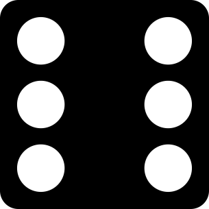

Charaktere
Allgemeines
Ein Charakter besteht aus drei Teilen: einem Charakterkonzept, der regelmechanischen Abbildung und der Ausrüstung.
- Charakterkonzept
- Das Konzept bestehend aus Dingen wie dem Werdegang, der Persönlichkeit, dem Aussehen oder familiären Bindungen bildet die rollenspielerische Grundlage. Ideen dafür finden sich in vielen Bereichen des täglichen Lebens, weshalb dieses Regelwerk absichtlich kein entsprechendes Kapitel beinhaltet.
- Eigenschaften
- Das Konzept wird durch spielrelevante Eigenschaften regelmechanisch abgebildet. Der Großteil des Kapitels "Charaktere" dreht sich um diese Eigenschaften.
- Ausrüstung
- Ausrüstung besteht aus allem was ein Charakter bei sich trägt, z.B. Kleidung, Gepäck oder Glücksbringer. Das Konzept und die gewählten Eigenschaften liefern dem Spieler Ideen, welche Ausrüstung zu seinem Charakter passt.
Überblick
Bei der Auswahl von Eigenschaften und Ausrüstung sind einige Besonderheiten zu beachten. Hier ein Überblick:
| Name | Besonderheiten | Maximalwert |
|---|---|---|
| Eigenschaften | ||
| Attribute | Alle Attribute mindestens auf 1; Glück ist optional | 10 |
| Fertigkeiten | 10 | |
| Spezialisierungen | Benötigt zugehörige Fertigkeit; darf höher sein als diese | 5 |
| Magiebereiche | 10 | |
| Techniken | 10 | |
| Foki | Benötigt zugehörigen Magiebereich und Technik; Höhe durch Magiebereich begrenzt | 5 |
| Traditionen | Mindestens eine wählen | - |
| Vor- und Nachteile | - | |
| Ausrüstung | ||
| Rüstungen | - | |
| Schilde und Parierwaffen | - | |
| Waffen | Benötigt zugehöriges Attribut auf bestimmter Höhe | - |
Für die meisten Proben wird eine Summe aus mehreren Eigenschaften verschiedener Typen gebildet:
- »Attribut« + »Fertigkeit« + »Spezialisierung«
- »Technik« + »Magiebereich« + »Fokus«
Während ein Schneiderlehrling zu Beginn seiner Ausbildung gerade mal eine Summe von 6 besitzt, erreicht der weltbekannte Hofschneider des Kaisers problemlos 22.
Charaktererschaffung
Der Spieler bezahlt die gewünschten Eigenschaften mit Erfahrungspunkten (EP) (siehe Tabelle). Für Startcharaktere werden 900 EP empfohlen.
Während der Charaktererschaffung gilt für Attribute, Fertigkeiten, Magiebereiche und Techniken ausnahmsweise ein Maximalwert von 8 statt 10 Punkten. Der Maximalwert von Spezialisierungen und Foki beträgt wie auch im späteren Spiel 5 Punkte.
Sollten EP übrig bleiben, können sie später im Spiel zum Steigern verwendet werden; die Kosten bleiben gleich.
| Punkte | Attribut | Technik | Fertigkeit / Magiebereich | Fokus | Spezialisierung |
|---|---|---|---|---|---|
| 1 | 10 | 6 | 4 | 4 | 2 |
| 2 | 15 | 9 | 6 | 6 | 3 |
| 3 | 25 | 15 | 10 | 10 | 5 |
| 4 | 40 | 24 | 16 | 16 | 8 |
| 5 | 60 | 36 | 24 | 24 | 12 |
| 6 | 85 | 51 | 34 | - | - |
| 7 | 115 | 69 | 46 | - | - |
| 8 | 150 | 90 | 60 | - | - |
| 9 | 190 | 114 | 76 | - | - |
| 10 | 235 | 141 | 94 | - | - |
Du wirst dir zu Beginn nicht alles leisten können, also fange mit den für dein Konzept wichtigsten Eigenschaften an. Vergiss aber auch nicht, deinem Charakter mit Eigenschaften für Interessen und Hobbies mehr Tiefe zu verleihen.
Steigerung
Im Laufe seiner Abenteurerkarriere kann ein Charakter seine Fähigkeiten verbessern Рer wird z.B. stärker, geschickter oder erfahrener im Umgang mit Magie. Dazu vergibt der Spielleiter für die im Spiel gemachten Erfahrungen regelmäßig weitere Erfahrungspunkte (EP).
Nach einer Steigerung müssen gegebenenfalls der Initiativebasiswert und der Grundschaden der Angriffe des Charakters neu berechnet werden (siehe ).
| Attribut | Technik | Fertigkeit / Magiebereich / Fokus | Spezialisierung | |
|---|---|---|---|---|
| Erster Punkt | 10 | 6 | 4 | 2 |
| Punktzahl um 1 steigern | Bisherige Punkte × 5 | Bisherige Punkte × 3 | Bisherige Punkte × 2 | Bisherige Punkte |
Zum Ende seines dritten Lehrjahres hat der Schneiderlehrling genug gelernt, um seine Fertigkeit Textilverarbeitung von 4 auf 5 zu steigern. Das kostet ihn 8 EP.
Gleichzeitig erhöht er die Spezialisierung Schneiderei von 4 auf 5. Das kostet ihn weitere 4 EP.
Eigenschaften
Das Regelwerk lässt dem Spieler sehr viel Entscheidungsfreiheit bei der Wahl der Eigenschaften:
- Alle Charaktere verwenden dieselben Eigenschaftslisten unabhängig von z.B. Archetypen, Kulturen, Professionen oder Hintergründen.
- Die meisten Eigenschaften bauen nicht aufeinander auf, sondern lassen sich unabhängig voneinander wählen und schränken spätere Entscheidungen nicht ein.
Attribute
Die grundlegenden körperlichen und geistigen Fähigkeiten eines Charakters werden mit Attributen ausgedrückt. Diese haben einen Wert zwischen 1 und 10.
Glück ist optional und liegt daher zwischen 0 und 10.
| Attribut | Abk. | Bedeutung |
|---|---|---|
| Körperlich | ||
 Körperkraft Körperkraft
|
KK | Nahkampf, physische Kraft, Ausdauer |
 Konstitution Konstitution |
KO | Körperliche Schadensvermeidung, Robustheit |
| Gewandtheit | GE | Nahkampf, Beweglichkeit, Schnelligkeit, Balance, Eleganz der Bewegungen |
| Fingerfertigkeit | FF | Fernkampf, geschickter Einsatz der Hände, feinmotorische Fähigkeiten, Hand-Augen-Koordination |
| Geistig | ||
 Klugheit Klugheit
|
KL | Analytisches Denken, Strukturierungs- und Merkfähigkeit |
 Willenskraft Willenskraft |
WK | Konzentration, Entschlossenheit, Selbsterhaltungstrieb |
| Intuition | IN | Initiative im Kampf, schnelles Entscheiden, Aufmerksamkeit, Feingefühl, Kreativität |
| Charisma | CH | Wirkung auf andere, Ausstrahlung, Präsenz |
| Sonstiges | ||
| Glück | GL | Glück haben |
Entzugsattribut
Jeder Charakter wählt eins seiner geistigen Attribute als Entzugsattribut. Dieses bestimmt den Stil, mit dem er der geistigen Anstrengung des Zauberns widersteht. Die Höhe des Attributs in Kombination mit dem jeweiligen Magiebereich bestimmt, wie gut ihm dies gelingen kann.
- Klugheit
- Kein Plan überlebt den Kontakt mit dem Gegner. Aber wer sagt denn, dass du nur einen hattest? Selbstverständlich hast du im Vorfeld alle Möglichkeiten durchgespielt und immer ein Ass im Ärmel.
- Intuition
- Dich erwischt man nicht auf dem falschen Fuß. Du spürst die Gefahr schon, bevor du sie siehst. Warum sollte es bei Magie anders sein?
- Charisma
- Magie ist eine Naturgewalt, sie lässt sich nicht bestechen. Aber du bist doch einfach nur freundlich. Das ist keine Bestechung, oder? Und falls doch, hat sich die Magie zumindest noch nie bei dir beschwert.
- Willenskraft
- Andere sagen, du bist ein Dickkopf. Du siehst dich eher als Fels in der Brandung. Der währt zwar nicht ewig, aber das ist ein Problem um das du dich später kümmerst.
Glück
Glück kann wie jedes Attribut für verwendet werden. Außerdem kann es ein Spieler einsetzen, um eine gescheiterte Probe doch noch zu schaffen, oder um eine gelungene Probe besonders gut zu bestehen.
Der Spieler bekommt in diesem Fall Bonuswürfel in Höhe seines Glückattributs und ermittelt das neue Probenergebnis. Erfolgreiche Einsätze von Glück werden auf dem Charakterblatt gezählt. Sobald die Einsätze die Höhe des Glücksattributs erreicht haben, darf der Spieler Glück nicht mehr einsetzen. Der Spielleiter entscheidet, wann der Zähler zurückgesetzt wird.
Der Spielleiter kann einen Hinweis darauf geben, ob die Probe mit Glück zu schaffen wäre.
Fertigkeiten
Fertigkeiten repräsentieren Kenntnisse und Ausbildung eines Charakters. Die Fertigkeiten in diesem Regelwerk sind so zugeschnitten, dass sie möglichst klar abgegrenzt sind und einen ähnlichen Umfang besitzen.
Fertigkeiten werden immmer mit einem Attribut kombiniert. Das zu verwendende Attribut wird vom Spielleiter der Situation entsprechend ausgewählt. Die häufigsten Kombinationen sind in der Tabelle angegeben.
Zur Übersicht sind die Fertigkeiten in die Bereiche , , , , und eingeteilt. Diese Einteilung hat jedoch keinen regeltechnischen Effekt.
Fertigkeiten haben Werte von 1 bis 10.
Tabellen auf- und zuklappbar machen?
Basisfertigkeiten
| Fertigkeit | Attribut | Kurzbeschreibung |
|---|---|---|
| Athletik | KK | Klettern, SchwimmenBetrifft insbesondere Tauchen, schnelles Schwimmen oder Ausweichen. Will sich ein Charakter einfach nur über Wasser halten, ist üblicherweise keine Athletikprobe nötig., Laufen, Sprinten |
| Heimlichkeit | GE | Schleichen, sich verstecken, unauffällig Personen verfolgen, Verkleidung |
| Körperbeherrschung | GE | Springen, Abrollen, Balancieren, Akrobatik |
| Magiekunde | KL | Wissen über verbreitete Gesten, Magietheorie |
| Manipulation | CH | Lügen, Überrumpeln, Einschüchtern, Betören |
| Menschenkenntnis | IN | Lügen erkennen, Verhalten vorhersehen, Motiv erkennen |
| Verhandlung | CH | Überzeugen, Feilschen, Kompromissfindung |
| Wahrnehmung | IN | Genauigkeit sämtlicher Sinneswahrnehmungen; Aufmerksamkeit |
| Wildnisleben | KL | Orientierung, Lagerplatz wählen, Wasser oder essbare Pflanzen finden, Wetterkunde |
Allgemeinbildung
Ein Großteil der Bevölkerung erlangt auch ohne formale Ausbildung Kenntnisse in diesen Fertigkeiten. Liegen keine besonderen Umstände vor, sollten Charaktere daher in einigen dieser Fertigkeiten mindestens 1 oder 2 Punkte besitzen.
Alle Fertigkeiten beziehen sich jeweils auf eine konkret benannte Region o.Ä. und können mehrfach gekauft werden.
Abhängig von Hintergrund und Ausbildung eines Charakters entscheidet sich der Spieler für einen Wert in der Fertigkeit Muttersprache. Diese kostet ihn keine EP.
| Fertigkeit | Attribut | Kurzbeschreibung |
|---|---|---|
| Muttersprache (»Name der Sprache«) Fremdsprache (»Name der Sprache«) |
divers | Attribut: IN (Sprechen/Verstehen), FF (Schreiben), KL (Lesen) |
| Adelskunde (»Region«) | KL | Abstammung einflussreicher Personen, Wappenzeichen und ihre Verwendung, Siegelkunde |
| Geschichtskunde (»Region«) | KL | Wissen über wichtige historische Ereignisse und Entwicklungen |
| Landeskunde (»Region«) | KL | Kenntnis von Landschaft und Klima; Lage von Städten, Flüssen und Grenzen |
| Pflanzenkunde (»Region«) | KL | Wissen über Verbreitung und Wirkung von Pflanzen sowie einfache Verarbeitung zu bspw. Tee, Pasten; Pilzkunde |
| Rechtskunde (»Region«) | KL | Wissen um strafbare Handlungen, Kenntnis von speziellen Rechtsbereichen, Vertrags- und Urkundenwesen, Verwaltungsvorschriften |
| Tierkunde (»Region«) | KL | Identifizieren verschiedener Tierarten, Wissen um deren Verhalten und Verbreitung, Spuren unterscheiden |
| Theologie (»Religionsgemeinschaft«) | KL | Wissen um Glaubensgrundsätze, heilige Schriften und Mythologie; Leitung und Durchführung religiöser Handlungen; Volksglaube |
| Volkskunde (»Volk/Gesellschaft«) | KL | Wissen um Alltagskultur, Bräuche, Liedgut, Literatur, bildende Kunst |
Allgemeine Kampffertigkeiten
| Fertigkeit | Attribut | Kurzbeschreibung |
|---|---|---|
| Beidhändiger Kampf | - | Ermöglicht den Kampf mit zwei Waffen (siehe unten) |
| Reflexe | IN | Initiative im Kampf, schnelles Reagieren |
| Verteidigung | IN | Abwehr von Nahkampfangriffen (siehe ); Parieren, Ausweichen, Schildblock |
Beidhändiger Kampf
Die Fertigkeit Beidhändiger Kampf erlaubt es dem Charakter, gleichzeitig mit zwei Waffen desselben Typs zu kämpfen. Dies gewährt dem Charakter zwar keine zusätzlichen Aktionen, erhöht aber die Erfolgschance.
Bei einem Angriff werden nacheinander die unten stehenden Proben durchgeführt. Das bessere Ergebnis wird gewertet.
| Attribut | Fertigkeit | Spezialisierung | |
|---|---|---|---|
| Haupthand | »Attribut« | »Waffenfertigkeit« |
»Spezialisierung« |
| Nebenhand | »Waffenfertigkeit« oder Beidhändiger Kampf (je nachdem welches niedriger ist) |
Die Parade folgt dem gleichen Muster:
| Attribut | Fertigkeit | Spezialisierung | |
|---|---|---|---|
| Haupthand | Gewandtheit | Verteidigung |
Parieren |
| Nebenhand | Verteidigung oder Beidhändiger Kampf (je nachdem welches niedriger ist) |
Nahkampffertigkeiten
| Fertigkeit | Attribut | Spezialisierungen |
|---|---|---|
| Dolche | GE | Dolch, Messer, Parierdolch |
| Fechtwaffen | GE | Degen, Dussack, Florett, Rapier |
| Hiebwaffen | KK | Axt, Bartaxt, Knüppel, Kriegsflegel, Kriegshammer, Machete, Morgenstern, Schmiedehammer |
| Schwerter | KK | Bastardschwert, Katana, Kurzschwert, Säbel, Schwert, Wakizashi |
| Stangenwaffen | KK | Bardiche, Glefe, Hellebarde, Kampfstab, Kriegssense, Partisane, Speer, Speer (einhändig) |
| Waffenloser Kampf | GE / KK | Raufen; Kampftechniken wie Boxen, Capoeira oder Kung Fu; Natürliche Waffen wie Klauen/Fang |
| Zweihand-Hiebwaffen | KK | Bidenhänder, Doppelblatt-Axt, Großaxt, Ogeraxt |
Fernkampffertigkeiten
| Fertigkeit | Attribut | Spezialisierungen |
|---|---|---|
| Armbrüste | FF | Leichte Armbrust, Pistolenarmbrust, Schwere Armbrust |
| Bögen | FF | Komposit-Recurvebogen, Langbogen, Reiterbogen |
| Wurfwaffen | FF | Wurfdolch, Wurfmesser, Wurfstern |
Berufsfertigkeiten
In der unten stehenden Tabelle sind für Spielercharaktere besonders typische Berufsfertigkeiten hervorgehoben.
| Fertigkeit | Attribut | Kurzbeschreibung |
|---|---|---|
| Architektur | KL | Architekturgeschichte; Bauleitung; Planung & Bau von Brücken, Festungen, Gärten, Sakralbauten, Straßen, Wasserstraßen und Wohngebäuden |
| Astronomie | KL | Astrologie (aufgrund der historischen Einordnung), Astrometrie, Himmelsmechanik (z.B. Berechnung von Kalendern) |
| Belagerung | KL | Bedienung von Artilleriewaffen und Belagerungswaffen (Ballista, Katapult), Mauerbrechen, Erstürmen von Festungsanlagen, Unterminieren von Befestigungen |
| Bergbau | divers | Anlage, Sicherung und Abbau von Tagebauen und Tiefbauen; Anlage und Bau von Tunneln, Auffinden und Bewerten von Lagerstätten |
| Chemie | FF | Alchemie, Chemische Analyse, Pyrotechnik, Herstellung von Arzneien |
| Chirurgie | FF | Wundversorgung, Invasive Behandlung von Skelett und Organen, Traumatologie, Foltern, Zahnheilkunde |
| Fahrzeugbau | divers | Bau von Fuhrwerken und landwirtschaftlichen Geräten, Herstellung von Rädern und Fässern, Boots- und Schiffsbau |
| Feinmechanik | FF | Büchsenmacher, Herstellung von Munition und Sprengsätzen, Schlosserei, Uhrmacherei |
| Fischerei | divers | Binnenfischerei, Perlenzucht, Seefischerei, Walfang |
| Gaukelei | FF / GE | Unterhaltung eines Publikums insb. durch Bauchreden, Entfesselung, Jonglage, Puppenspiel, Taschenspielerei; umfasst auch Falschspiel und Taschendiebstahl |
| Gesteinskunde | KL | Kenntnis vom Aufbau des Gesteins, Kristallzucht, Kenntnis von Mineralen und ihrer Verwendung, Höhlenkunde |
| Glasmacherei | FF | Buntglaser, Glasbläser, Herstellung künstlicher Edelsteine, Bau optischer Instrumente |
| Holzbearbeitung | FF | Dachdecker, Drechseln, Korbflechten, Schnitzen, Tischlerei, Zimmerei |
| Instrumentenbau | FF | Bau und Wartung von Musikinstrumenten, Bögen und Armbrüsten mit entsprechenden Geschossen sowie Spielzeug |
| Jagdwesen | GE | Fallen stellen, Fährten lesen & verfolgen, Einzeljagd, Durchführen von Gesellschaftsjagden, Einsatz von abgerichteten Greifvögeln |
| Juwelierskunst | FF | Herstellung von Schmuck aus Edelmetallen und Edelsteinen, Juwelenschleifen, Prägen von Münzen und Medaillen, Schneiden von Siegeln |
| Keramik | FF | Herstellung von Gebrauchsgegenständen aus Ton, Porzellan und Steingut; Glasieren, Emaillieren und Bemalen von Glas und Keramik, Herstellung von Ziegeln, Fliesen etc.; Stuckarbeiten |
| Kochkunst | IN | Herstellung verschiedener Lebensmittel durch Kochen, Zerlegen von Tieren, Bäckerei und Konditorei, Molkerei, Brauerei, Brennerei |
| Kosmetik | FF | Körperpflege- und kosmetische Behandlungen; Behandlung von Erkrankungen durch Badekuren; Schneiden und Frisieren von Bart- und Haupthaar; Körperschmuck wie Tätowieren oder Branding; Herstellung von Seifen, Duftstoffen oder Parfums |
| Kriegskunst | KL | Taktik und Strategie, Truppen kommandieren und motivieren |
| Landvermessung | KL | Erstellung und Interpretation von Landkarten, Winkel- und Höhenmessung, Navigation |
| Landwirtschaft | KL | Bewirtschaftung von Äckern, Gärten und anderen Flächen zur Gewinnung von Nahrungsmitteln, Zier- und Heilpflanzen; Forstwirtschaft; Herstellung von Süßmost und Obstweinen; Keltern von Weinen; Zucht von Pilzen |
| Lederarbeiten | FF | Buchbinderei, Gerberei, Kürschnerei, Pergamentmacherei, Schuhmacherei |
| Lehren | KL | Effiziente Vermittlung von Kenntnissen in den Bereichen Handwerk, Wissen, Magie und KampfHat ein Charakter beim Steigern oder Erlernen von Eigenschaften einen geeigneten Lehrmeister, kann der Spielleiter die benötigte Zeit abhängig von dessen Erfolgen bei einer Lehren-Probe reduzieren. |
| Malen / Zeichnen | FF | Skizzen, Kalligraphie, Porträt- und Landschaftsmalerei |
| Mathematik | KL | Rechnen, Auflösen von Gleichungen, Zinsrechnung, Geometrie, Statistik, Ver- und Entschlüsselung von Botschaften |
| Mechanik | KL | Festkörpermechanik, Bewegungsgesetze, Verständnis und Nutzung von Hydraulik, Konstruktion technischer Anlagen |
| Medizin | KL | Diagnose und Therapie von Krankheiten, Krankenpflege, Herstellung von Arzneien, Geburtshilfe, Allgemein- und Fachmedizin |
| Metallurgie | KL | Gewinnung von Metallen, Eisen und Stahl aus den jeweiligen Rohstoffen; Metallgießerei und Glockengießen; Gewinnung von Salzen; Herstellung von Holzkohle |
| Musik | IN | Verschiedene Musikinstrumente, Musikalische Improvisation, Kompositionslehre, Musikgeschichte, Gesang, Spezielle Gesangstechniken, Chor- und Orchesterleitung, Tontechnik, Akustik |
| Ökonomie | KL | Haus- und Betriebswirtschaft; Kenntnis von Münzen und Zahlungsmitteln; Buchhaltung; Kenntnis von Angebot und Nachfrage, Liefer- und Absatzmärkten sowie Produktionskosten von Waren |
| Philosophie | KL | Logik und Erkenntniskritik, korrektes Schlussfolgern, Ethik und Rechtsphilosophie, Anthropologie, Ästhetik, Metaphysik, Geschichts- und Religionsphilosophie |
| Reitkunst | GE | Beherrschen von Reittieren, Führen und Warten von Fuhrwerken, aber auch das Führen von Nahkampf- und Fernkampfwaffen während des Reitens sowie Lanzenreiten. |
| Schauspielerei | CH | Bühnenschauspiel, Vortrag von Lyrik und Märchen |
| Schifffahrt | divers | Führung von Booten und Kommandieren von Schiffsmannschaften; Segeln; Rudern; Flößen; Wellenreiten, Windsurfen, Snowboarding etc. |
| Schmiedekunst | FF / KK | Herstellung von Blank- und Hiebwaffen sowie Pfeilspitzen; Rüstungsbau, Kupferschmiedearbeiten; Herstellung von Gebrauchsgegenständen und Werkzeugen; Drahtziehen |
| Steinbearbeitung | divers | Maurerhandwerk; Steinmetzarbeiten und Bildhauerei; Verlegung von Kacheln, Fliesen und Pflasterungen; Zurechtschlagen von Feuerstein zu Waffen und Werkzeugen; Errichten von Bauwerken aus Beton und ähnlichen Gussmaterialien |
| Textilfabrikation | divers | Herstellung von Textilien durch Weben und Filzen; Erzeugung von Garnen, Seidenfasern, Papier und Karton; Herstellung, Aufbereitung und Verwendung von Farbmitteln |
| Textilverarbeitung | FF | Schneiderei, Sticken, Häkeln, Stricken, Knüpfen von Teppichen, Textilpflege, Segelmacherei, Netze knüpfen, Verarbeitung von Papier und Kartonagen zu Gebrauchsgegenständen |
| Tierwirtschaft | KL | Haltung und Zucht von »Tierart«, Imkerei, Tiermedizin, Ausbildung von Nutztieren zu Arbeitszwecken, Abrichten für Jagdzwecke, Dressur |
Spezialisierungen
Die Fertigkeiten sind bewusst grob gehalten, um mit einer überschaubaren Anzahl von Spielwerten einen sinnvollen Bereich von Fähigkeiten ausdrücken zu können. Eine genaue Ausdifferenzierung ist damit jedoch nicht möglich. Diese Lücke wird durch Spezialisierungen gefüllt. In diesem Regelwerk gibt es keine Liste von möglichen Spezialisierungen; Hinweise dazu liefern jedoch meist die Beschreibungen der jeweiligen Fertigkeiten.
Charaktere können nur Spezialisierungen wählen, wenn sie die zugehörige Fertigkeit beherrschen. Der Wert einer Spezialisierung darf höchstens 5 betragen. Er kann den Wert der Fertigkeit übersteigen, wenn Spieler und Spielleiter einen schlüssigen Grund dafür sehen.
Die Fertigkeit Waffenloser Kampf auf 2 mit der Spezialisierung Karate auf 4 beschreibt den Charakter als Spezialisten. Die Kombination aus Wahrnehmung auf 1 und Sicht auf 5 ist jedoch pure Kostenoptimierung.
Initiative
Um in einem Kampf entscheiden zu können in welcher Reihenfolge die Beteiligten handeln, wird die Initiative ermittelt. Sie ist die Summe aus dem festen Initiativebasiswert und dem jeweils neu ermittelten Initiativewurf.
Die Beteiligten handeln in absteigender Reihenfolge ihrer Initiative.
- Initiativebasiswert
- Ergibt sich aus dem Attribut Intuition und der Fertigkeit Reflexe:
(Intuition + Reflexe) × 2. - Initiativewurf
- Ergebnis eines 2W6-Wurfs.
Magiebereiche
Alles, was durch Magie beeinflusst werden kann, lässt sich einem der folgenden Magiebereiche zuordnen. Magiebereiche werden für Proben mit Techniken kombiniert.
Magiebereiche haben Werte von 1 bis 10.
Techniken
Für jeden Zauber wählt der Charakter die zur Vorgehensweise passende Technik.
Techniken haben Werte von 1 bis 10.
Foki
Foki sind Spezialisierungen magischer Art. Ein Fokus drückt aus, dass der Charakter in einer bestimmten Kombination von Magiebereich und Technik besonders gut ist.
Der Wert eines Fokus darf höchstens 5 betragen und den Wert des Magiebereichs nicht übersteigen.
Ein Charakter mit dem Fokus Tier erschaffen kann damit sein Pferd besser heilen. Diesen Fokus kann er aber genauso nutzen, wenn er das Gift einer Schlange herstellen will.
Magische Basisangriffe
Selbstverständlich können Charaktere auch mit Zauberei kämpfen. Die allgemeinen Regeln zur Magie sind allerdings sehr umfangreich und können die Atmosphäre im Kampf etwas stören.
Magische Basisangriffe bieten eine Lösung für dieses Problem: Sie verzichten bewusst auf einige Details, damit der Angriff genauso schnell abgewickelt werden kann wie ein Schwertstreich. Der Spieler muss sich lediglich für einen Magiebereich und eine passende Technik entscheiden, z.B. „Feuer & Erschaffen” oder „Tier & Zerstören”.
Die Magiebereiche Darstellung und Geist sowie die Techniken Erkennen, Koppeln und Verankern können nicht für Basisangriffe verwendet werden.
- Schadenscode
-
Um einen Magiebereich für Basisangriffe verwenden zu können, muss der geklammerte Ausdruck mindestens 0 ergeben.
- Grundschaden
-
Der Grundschaden eines Basisangriffs wird aus dem Schadenscode berechnet. Das Ergebnis wird durch den Wert hinter dem Kleiner-Gleich-Zeichen (≤) begrenzt.
Außerdem werden die folgenden Werte auf dem Charakterblatt im Abschnitt „Kampf” notiert:
- Die Spalte „Würfel” berechnet sich aus Magiebereich + Technik + Fokus.
- Der Mindestwurf beträgt 2.
| Magiebereich | Schadenscode |
|---|---|
| Erde Feuer Humanoid Kraft Luft Metall Pflanze Tier Wasser |
1 + (Magiebereich − 3) ≤ 4 |
Traditionen
Erwähnen, dass die Traditionsauswahl auch eine Flair-Entscheidung ist. Sonst ist dieser Abschnitt verglichen mit "Entzugsattribut" und "Magietheorie" super lame.
Jeder magiebegabte Charakter muss mindestens eine Tradition auswählen. Diese nennt die Bedingungen, die während der gesamten Zauberdauer erfüllt sein müssen. Besitzt ein Charakter mehrere Traditionen, müssen alle Bedingungen gleichzeitig erfüllt sein.
Da Charaktere durch Traditionen eingeschränkt werden, erhalten sie zum Ausgleich weitere EP für die Charaktererschaffung.
| Name | Bedingung | EP |
|---|---|---|
| Talismane | Der Charakter kann nicht zaubern, ohne Talismane bei sich zu tragen. Ein Talisman ist ein bestimmter Gegenstand, den der Charakter an einen oder mehrere Magiebereiche gebunden hat. Die Bindung eines neuen Talismans ist ein langwieriger Prozess, der die Bindung dieses Magiebereichs an einen vorherigen Talisman aufhebt. | +10 |
| Zauberformeln | Für jeden Zauber müssen bestimmte Worte deutlich gesprochen werden. Diese sind nicht unbedingt für Außenstehende verständlich, unterscheiden sich aber auf jeden Fall von normalen Sätzen. | +20 |
| Zaubergesten | Das Zaubern erfordert die Ausführung bestimmter Gesten mit Armen und Händen. | +40 |
| Bodenkontakt | Der Zaubernde muss mit beiden Füßen Kontakt zum Boden haben. Dazu zählen auch alle Böden in Gebäuden. Der Charakter kann während des Zauberns gehen, aber nicht rennen. Das Tragen von Schuhen ist kein Hindernis. | +50 |
| Verletzung | Der Charakter kann nur zaubern, wenn er mindestens eine körperliche Schadensstufe besitzt. | +60 |
| Trunkenheit | Zaubern ist nur möglich, wenn der Charakter unter so starkem Alkoholeinfluss steht, dass dadurch ein Erfolgsmalus von mindestens 1 verursacht wird. | +90 |
| Nacht / Tag | Der Charakter kann nur zaubern, wenn es gerade Nacht (bzw. Tag) ist. Es spielt keine Rolle, ob der Charakter die Tageszeit kennt oder sie sehen kann. | +110 |
| Unversehrtheit | Der Einsatz von Magie erfordert, dass der Charakter keinerlei körperliche Schadensstufen besitzt. | +130 |
Vor- und Nachteile
Ein Spieler kann für seinen Charakter Vorteile kaufen sowie für Nachteile EP erhalten.
Auch nach der Charaktererschaffung können noch Vorteile zu den gleichen Kosten gekauft werden. Außerdem können zuvor gewählte Nachteile abgebaut werden, in dem die erhaltenen EP „zurückgezahlt” werden.
Gesundheit
Der Gesundheitszustand eines Charakters wird durch zwei Schadensleisten angezeigt, eine für körperlichen und eine für geistigen Schaden. Diese Leisten bestehen jeweils aus 12 Schadensstufen, unabhängig von den Werten des Charakters. Wenn man Schaden erhält, kreuzt man die entsprechende Menge Kästchen auf der Schadensleiste des Charakterblatts an.

|
|
|
|
|
|
|
|
|
|
|
|
| −0 | −0 | −1 | −1 | −1 | −2 | −2 | −2 | −3 | −3 | −3 | X |
Der Charakter wird durch erhaltenen Schaden in seinen Handlungen behindert, was durch den Verletzungsmalus ausgedrückt wird. Der aktuelle Verletzungsmalus wird an der zuletzt angekreuzten Schadensstufe abgelesen. Dabei werden die Verletzungsmali der beiden Leisten nicht addiert, es gilt nur der höhere.
Bei den meisten Proben verringert der Verletzungsmalus die Erfolgsanzahl. Die Ausnahmen sind Widerstandswürfe, Rettungswürfe und Entzugswürfe.
Wird die letzte körperliche Schadensstufe erreicht, verliert der Charakter das Bewusstsein und ist dem Tod nahe. Hat
der Charakter über die letzte Stufe hinaus Schaden erhalten, kann ihn allenfalls der sofortige Einsatz von
Heilungsmagie retten.
Wird die letzte geistige Schadensstufe erreicht, verliert der Charakter das Bewusstsein.
Darüber hinaus gehender geistiger Schaden wird auf die körperliche Schadensleiste übertragen.
Ausrüstung
Gemäß dem Anspruch ein griffiges, kompaktes Regelwerk zu sein verzichtet AdZ auf allgemeine Ausrüstungslisten und beschränkt sich auf die regelrelevanten Werte von Waffen und Rüstungen.
Rüstungen
Um sich besser zu schützen, können Charaktere Rüstungen tragen. Diese sind zwar vorteilhaft für die Verteidigung (RS & WB), bedeuten aber oft auch eine Einschränkung beim Angriff (AM).
Zauberkundige können außerdem Rüstungen erschaffen, Rüstungen verbessern oder ihren eigenen Körper verstärken. Werden solche magischen Rüstungen mit mundanen Rüstungen kombiniert, werden ihre Werte nicht addiert. Stattdessen gilt der jeweils höhere Wert.
- Rüstungsschutz (RS)
-
Der Rüstungsschutz ist ein fixer Abzug auf die Anzahl der Schadenspunkte eines Angriffs (siehe ).
- Widerstandsbonus (WB)
-
Der Widerstandsbonus erhöht die Chance, mit dem die Schadenspunkte zu reduzieren.
- Angriffsmalus (AM)
-
Mittlere und schwere Rüstungen schränken die Beweglichkeit ein und haben daher einen Angriffsmalus. Dieser senkt die Würfelanzahl des eigenen Angriffswurfs.
| Rüstungstyp | Rüstungsschutz | Widerstandsbonus | Angriffsmalus |
|---|---|---|---|
| Leichte Rüstungen | |||
| Holz-Rüstungsteile | 0 | 3 | 0 |
| Leder-Rüstungsteile | 0 | 3 | 0 |
| Lederrüstung | 1 | 0 | 0 |
| Stoffrüstung | 1 | 0 | 0 |
| Mittlere Rüstungen | |||
| Brustpanzer | 3 | 0 | −2 |
| Dicke Felle | 1 | 3 | −1 |
| Holzrüstung | 1 | 3 | −1 |
| Kettenrüstung | 3 | 0 | −2 |
| Lamellenrüstung | 3 | 0 | −2 |
| Lederrüstung, beschlagen | 2 | 0 | −1 |
| Lederrüstung, dick | 2 | 0 | −1 |
| Schuppenrüstung | 3 | 0 | −2 |
| Schuppenüberwurf | 2 | 0 | −1 |
| Schwere Rüstungen | |||
| Plattenrüstung, leicht | 4 | 0 | −3 |
| Plattenrüstung, voll | 5 | 0 | −5 |
| Ringelpanzer | 4 | 0 | −3 |
| Magische Rüstungen (RS und WB) | |||
| Erde Humanoid Metall Pflanze Tier Wasser |
1 pro 2 KP | 1 pro KP | - |
| Magische Rüstungen (nur WB) | |||
| Darstellung Luft |
- | 1 pro KP | - |
Schilde und Parierwaffen
Neben Rüstungen können Charaktere auch mit Schilden und Parierwaffen ihre Verteidigung verbessern (VM), allerdings auf Kosten ihrer Angriffsmöglichkeiten (AM).
- Verteidigungsmodifikator (VM)
-
Schilde und Parierwaffen verbessern die Verteidigung und besitzen daher einen positiven Verteidigungsmodifikator. Dieser erhöht die Würfelanzahl des eigenen Verteidigungswurfs.
- Angriffsmalus (AM)
-
Schilde schränken den Aktionsradius der Waffe ein und haben daher einen Angriffsmalus. Dieser senkt die Würfelanzahl des eigenen Angriffswurfs.
| Bezeichnung | Verteidigungsmodifikator | Angriffsmalus |
|---|---|---|
| Schilde | ||
| Rundschild, klein | +3 | −1 |
| Rundschild, groß | +4 | −2 |
| Turmschild | +5 | −4 |
| Parierwaffen | ||
| Parierdolch | +2 | 0 |
| Springklingendolch | +3 | 0 |
Waffen
- Schadenscode
-
Der Schadenscode gibt an, auf welchem Attribut der Waffenschaden basiert.
Außerdem muss der geklammerte Ausdruck mindestens 0 ergeben, um die gewünschte Waffe überhaupt führen zu dürfen.
- Grundschaden
-
Der Grundschaden einer Waffe wird aus ihrem Schadenscode berechnet. Das Ergebnis wird durch den Wert hinter dem Kleiner-Gleich-Zeichen (≤) begrenzt.
- Verteidigungsmodifikator (VM)
-
Große und schwere Waffen behindern die Verteidigung und besitzen daher einen negativen Verteidigungsmodifikator. Dieser reduziert die Würfelanzahl des eigenen Verteidigungswurfs.
Die folgenden zusätzlichen Werte werden auf dem Charakterblatt im Abschnitt „Kampf” notiert:
- Die Spalte „Würfel” berechnet sich aus Attribut + Fertigkeit + Spezialisierung − Angriffsmalus.
- Der Mindestwurf beträgt 1.
Nahkampf
| Bezeichnung | Schadenscode | Verteidigungsmodifikator |
|---|---|---|
| Waffenloser Kampf | ||
| Boxen | 1 + (KK − 5) ≤ 3 | ±0 |
| Capoeira | 1 + (GE − 5) ≤ 3 | ±0 |
| Karate | 1 + (GE − 5) ≤ 3 | ±0 |
| Klauen/Fang (tierisch) | 2 + (GE − 5) ≤ 5 | ±0 |
| Kung Fu | 1 + (KK − 5) ≤ 3 | ±0 |
| Raufen | 0 + (KK − 5) ≤ 2 | ±0 |
| Dolche | ||
| Dolch | 1 + (GE − 3) ≤ 3 | ±0 |
| Erntemesser* | 1 + (GE − 2) ≤ 2 | ±0 |
| Messer | 1 + (GE − 2) ≤ 2 | ±0 |
| Parierdolch | 1 + (GE − 4) ≤ 2 | ±0 |
| Sichel* | 1 + (GE − 3) ≤ 3 | −1 |
| Fechtwaffen | ||
| Degen | 2 + (GE − 5) ≤ 5 | ±0 |
| Dussack | 2 + (GE − 3) ≤ 4 | ±0 |
| Florett | 2 + (GE − 4) ≤ 4 | ±0 |
| Rapier | 2 + (GE − 4) ≤ 5 | ±0 |
| Hiebwaffen | ||
| Axt (einhändig) | 3 + (KK − 4) ≤ 5 | ±0 |
| Bartaxt | 3 + (KK − 4) ≤ 5 | ±0 |
| Dreschflegel* | 2 + (KK − 4) ≤ 4 | ±0 |
| Knüppel | 2 + (KK − 4) ≤ 3 | ±0 |
| Kriegsflegel | 3 + (KK − 4) ≤ 5 | ±0 |
| Kriegshammer | 3 + (KK − 4) ≤ 5 | ±0 |
| Machete | 3 + (KK − 4) ≤ 5 | ±0 |
| Morgenstern | 3 + (KK − 4) ≤ 5 | ±0 |
| Schmiedehammer | 2 + (KK − 4) ≤ 4 | ±0 |
| Schwerter | ||
| Bastardschwert | 4 + (KK − 5) ≤ 6 | −3 |
| Katana | 4 + (KK − 5) ≤ 6 | −3 |
| Kurzschwert | 2 + (KK − 3) ≤ 5 | ±0 |
| Säbel | 3 + (KK − 4) ≤ 5 | ±0 |
| Schwert | 3 + (KK − 4) ≤ 5 | ±0 |
| Wakizashi | 2 + (KK − 3) ≤ 5 | ±0 |
| Stangenwaffen | ||
| Bardiche | 6 + (KK − 7) ≤ 8 | −3 |
| Glefe | 5 + (KK − 6) ≤ 7 | −2 |
| Hellebarde | 5 + (KK − 6) ≤ 7 | −2 |
| Kampfstab | 2 + (KK − 4) ≤ 5 | ±0 |
| Kriegssense | 5 + (KK − 6) ≤ 7 | −2 |
| Partisane | 4 + (KK − 5) ≤ 6 | −1 |
| Sense* | 3 + (KK − 4) ≤ 6 | −1 |
| Speer | 4 + (KK − 5) ≤ 7 | −2 |
| Speer (einhändig) | 3 + (KK − 4) ≤ 6 | −3 |
| Wanderstab* | 2 + (KK − 3) ≤ 4 | ±0 |
| Zweihand-Hiebwaffen | ||
| Bidenhänder | 5 + (KK − 6) ≤ 7 | −2 |
| Doppelblatt-Axt | 5 + (KK − 6) ≤ 7 | −2 |
| Großaxt | 5 + (KK − 6) ≤ 7 | −2 |
| Ogeraxt | 6 + (KK − 7) ≤ 9 | −3 |
(* Improvisierte Waffe)
Fernkampf
| Bezeichnung | Schadenscode | Verteidigungsmodifikator | Reichweite in m |
|---|---|---|---|
| Armbrüste | |||
| Leichte Armbrust | 4 + (FF − 4) ≤ 6 | −2 | 10 / 25 / 50 / 100 |
| Pistolenarmbrust | 2 + (FF − 3) ≤ 4 | −1 | 5 / 10 / 25 / 50 |
| Schwere Armbrust | 5 + (FF − 5) ≤ 8 | −3 | 10 / 25 / 50 / 100 |
| Schwere Armbrust (Oger) | 6 + (FF − 6) ≤ 8 | −4 | 25 / 50 / 100 / 250 |
| Schwere Armbrust (Riese) | 7 + (FF − 7) ≤ 9 | −4 | 25 / 50 / 100 / 250 |
| Bögen | |||
| Komposit-Recurvebogen kürzer als ein Langbogen |
4 + (FF − 6) ≤ 7 | −2 | 10 / 25 / 50 / 100 |
| Langbogen Länge = Körpergröße |
5 + (FF − 5) ≤ 7 | −3 | 5 / 10 / 25 / 50 |
| Reiterbogen Komposit, Recurve, kompakt |
3 + (FF − 6) ≤ 6 | −1 | 5 / 10 / 25 / 50 |
| Wurfwaffen | |||
| Wurfdolch | 1 + (FF − 3) ≤ 3 | ±0 | 2 / 5 / 10 / 25 |
| Wurfmesser | 2 + (FF − 4) ≤ 4 | ±0 | 2 / 5 / 10 / 25 |
| Wurfstern | 1 + (FF − 5) ≤ 5 | ±0 | 2 / 5 / 10 / 25 |
Das Spiel
Ab hier weiter!
Proben
Alltägliche Handlungen wie Gehen, Essen oder das Wirken eines trivialen Zaubers werden einem Charakter immer gelingen. Wenn es jedoch fraglich ist, ob eine Aktion gelingt, wird der Spielleiter eine Probe auf die Eigenschaften des Charakters verlangen.
Überblick
Eine Probe wird durch das Rollen mehrerer sechsseitiger Würfel (kurz: W6) durchgeführt, wobei die Würfelanzahl von den Eigenschaften des Charakters abhängt. Das Ergebnis des Würfelwurfs wird als Anzahl von Erfolgen angegeben. Damit die Probe gelingt, muss der Spieler eine vom Spielleiter bestimmte Anzahl von Erfolgen, den Mindestwurf, erreichen.
Würfelanzahl
Die Würfelanzahl ergibt sich je nach Art der Probe aus verschiedenen Eigenschaften, liegt jedoch niemals über 25.Die Begrenzung auf 25 Würfel gilt selbst dann, wenn andere Regeln Bonuswürfel gewähren würden, wie beispielsweise durch Umstandsmodifikatoren, Glück oder beim gemeinsamen Zaubern.
Umstandsmodifikatoren
Neben den Fähigkeiten eines Charakters gibt es häufig weitere Umstände, welche die Probe beeinflussen. Für negative Einflüsse wie besondere Eile oder widrige Bedingungen (z.B. eisige Kälte) kann der Spielleiter einen Würfelmalus bestimmen. Umgekehrt können positive Einflüsse wie gute Vorbereitung, ausführliches Zielen oder Hilfe von anderen einen Würfelbonus bewirken. Dabei werden alle anwendbaren Würfelmali und -boni auf die zuvor bestimmte Würfelanzahl angerechnet.
Mindestwurf
Als nächstes legt der Spielleiter den zu erreichenden Mindestwurf fest. Er beträgt mindestens 1; seine genaue Höhe hängt von der Schwierigkeit der Aufgabe und den Begleitumständen ab. Für einige Arten von Aufgaben wie das Zaubern sind in diesem Regelwerk Richtlinien für Mindestwürfe aufgeführt; als generelle Orientierung kann die folgende Tabelle verwendet werden:
| Art der Aufgabe | Mindestwurf | Erfolgschance | ||
|---|---|---|---|---|
| 6 Würfel | 12 Würfel | 20 Würfel | ||
| Routine | 2 | 64,9% | 94,6% | 99,7% |
| Herausforderung | 4 | 10,0% | 60,7% | 94,0% |
| Schwierig | 6 | 0,1% | 17,8% | 70,3% |
| Extrem schwierig | 8 | - | 1,9% | 33,9% |
| Fast unmöglich | 10 | - | 0,1% | 9,2% |
Für die Verwendung einer verwandten Fertigkeit statt der passenden erhöht sich der Mindestwurf nach Spielleiterentscheid um mindestens 1 Erfolg, je nach Verwandtschaft der Fertigkeiten bzw. Eignung für die aktuelle Aufgabe.
Die Frage nach dem letzten bekannten Auftauchen des Necronomicons kann mit der Fertigkeit Allgemeinbildung nur sehr schwer beantwortet werden, für Charaktere mit der Fertigkeit Okkultismus jedoch bedeutend einfacher.
Erfolge
Reihenfolge klären: mindestwurf-dann-erfolge oder erfolge-mindestwurf-auswertung?
Das Ergebnis einer Probe wird als Anzahl von Erfolgen angegeben. Jeder gerollte Würfel, der eine 5 oder 6 zeigt, zählt als ein Erfolg.
Ist der Charakter verwundet oder erschöpft, gilt ein Verletzungsmalus, der auf die Erfolgsanzahl angerechnet wird (siehe ). Ist die Anzahl der verbleibenden Erfolge gleich oder höher als der zuvor festgelegte Mindestwurf, ist die Probe gelungen. Verbleiben weniger oder gar keine Erfolge, ist sie gescheitert.
Die Erfolge, welche über den Mindestwurf hinaus gehen, heißen Zusatzerfolge.
Fertigkeitsproben
Die Würfelanzahl entspricht der Summe der Punktzahlen von Attribut, Fertigkeit und ggf. einer passenden Spezialisierung. Der Spielleiter kann auch einige Bonuswürfel gewähren, wenn der Charakter weitere relevante Fertigkeiten oder Magiebereiche besitzt.
Das zu verwendende Attribut wird vom Spielleiter der Situation entsprechend ausgewählt.
- Beruhigen eines Pferds mit Reitkunst + Charisma (statt Gewandtheit)
- Schienen des eigenen gebrochenen Arms mit Medizin + Willenskraft (statt Klugheit)
- Herstellung von Nitroglyzerin mit Chemie + Fingerfertigkeit (statt Klugheit)
Sollte der Charakter die Fertigkeit nicht besitzen, entspricht die Würfelanzahl der Höhe des Attributs. Alternativ darf der Spieler nach Spielleiterentscheid auch eine verwandte Fertigkeit einsetzen.
Elris, seines Zeichens zukünftiger Meisterdieb, ist in den frühen Morgenstunden im Haus eines reichen Bürgers bei der Arbeit. Da man sich in Elris' Gewerbe jedoch möglichst lautlos bewegen sollte, verlangt der Spielleiter von Elris eine Heimlichkeits-Probe. Und weil ja ausnahmslos alle Holzdielen die Angewohnheit haben, in den unpassendsten Momenten zu knarren und zu quietschen, ist diese Probe gar nicht so leicht: der Spielleiter sagt einen Mindestwurf von 3 an.
Elris hat Gewandtheit 5, Heimlichkeit 3 und die Spezialisierung Schleichen auf 2, macht 10. Er rollt seine 10 Würfel und erzielt 4 Erfolge. Damit übertrifft er sogar den geforderten Mindestwurf РElris schafft es also, kaum verräterische Geräusche zu verursachen und selbst sein Atem ist kaum zu hören. Hätte er weniger als 3 Erfolge gehabt, wäre er direkt und lautstark auf eine knarrende Diele getreten.
Angriffe
Allgemeines
„verschiedene arten von angriffen, ablauf immer gleich” o.Ä.
irgendwas zum grundschaden erklären
- Angriffswurf
-
betonen, dass mehrere AMs (rüstung, waffe, waffe...) kumulativ sind
Für den Angriffswurf wird die Fertigkeit des Waffentyps bzw. der Kampftechnik mit dem Attribut kombiniert, das im Schadenscode aufgeführt ist. Die Würfelanzahl wird um den Verletzungsmalus sowie den Angriffsmalus der getragenen Ausrüstung verringert (siehe sowie ).
Der Mindestwurf richtet sich nach der Art des Angriffs.
- Schadensermittlung
-
Waffenloser Kampf verursacht in den meisten Fällen geistigen Schaden, alle anderen Angriffe körperlichen Schaden (siehe ).
Jeder Angriff verursacht eine bestimmte Menge an Grundschaden, die vorab auf dem Charakterblatt notiert wurde. Darüber hinaus richtet ein Angriff Bonusschaden in Höhe der übrigen Angriffserfolge an.
Trägt der Verteidiger eine Rüstung, wird der Schaden für jeden Punkt Rüstungsschutz um 1 gesenkt (siehe ).
- Widerstandswurf
-
Dem Verteidiger steht nun ein Widerstandswurf zu, der seine Zähigkeit und Widerstandsfähigkeit repräsentiert. Die Würfelanzahl entspricht dem Attribut Konstitutionund wird gegebenenfalls noch durch den Widerstandsbonus seiner Rüstung erhöht.
Für jeden Erfolg bei diesem Wurf wird der Schaden um 1 reduziert. Ein eventueller Verletzungsmalus wird nicht angewendet.
Nahkampfangriff
Der Mindestwurf beträgt für einen normalen Angriff 1; für besondere Manöver gilt nach Spielleiterentscheid ein höherer Mindestwurf.Der Verteidigungswurf muss auch in diesem Fall alle Erfolge negieren Рbesonders schwierige Manöver sind auch schwierig abzuwehren.
Was passiert mit diesem Beispiel? Es passt nicht mehr so recht zur Gliederung.
alle elris-beispiele an geänderte kapitelreihenfolge anpassen
Während seiner Aktionsphase greift Elris Gegner B mit 9 Würfeln (Körperkraft 5, Schwerter 4) an und erzielt 3 Erfolge.
Elris’ Gegner versucht jetzt mit 9 W√ºrfeln (Gewandtheit 4 + Verteidigung 3 + Parieren 2) zu parieren. Er erzielt 2 Erfolge und kann damit den Angriff zwar nicht vollst√§ndig abwehren, aber zumindest zu weniger verletzlichen K√∂rperstellen ablenken. Seine Parade-Erfolge werden von Elris’ Angriffserfolgen abgezogen, √ºbrig bleibt 1 Erfolg.
Ein Schwert hat den Schadenscode 3 + (KK − 4), für Elris beträgt der Grundschaden also 4. Der verbleibende Angriffserfolg erhöht diesen Schaden um 1 auf 5.
Gegner B (Konstitution 3) trägt einfache Straßenkleidung. Bei seinem Widerstandswurf erzielt er mit seinen 3 Würfeln 1 Erfolg. Es bleiben also noch 4 Schadenspunkte übrig, die auf seiner Schadensleiste eingetragen werden. Er erhält von nun an einen Verletzungsmalus von 1 Erfolg.
Fernkampfangriff
Der Mindestwurf von 1 wird je nach Distanz und Größe des Ziels modifiziert. Dabei werden die unten stehenden Modifikatoren für Distanzbereich und Größe miteinander verrechnet, der Mindestwurf beträgt jedoch immer mindestens 1.
| Distanzbereich | Modifikator |
|---|---|
| sehr nah | +0 |
| nah | +1 |
| mittel | +2 |
| weit | +3 |
| Größe | Modifikator |
|---|---|
| winzig | +2 |
| klein | +1 |
| mittel | ±0 |
| groß | −1 |
| riesig | −2 |
In welchen Distanzbereich ein Ziel fällt, ergibt sich aus den Reichweitenangaben in der Fernkampf-Waffentabelle. Die Werte geben für die vier Bereiche die jeweilige maximale Distanz in Metern an.Die Reichweitenangaben beziehen sich auf das Treffen eines Ziels; die maximale Flugweite einer Waffe liegt deutlich höher.
Ein Schütze möchte mit einem Kriegsbogen (25 / 50 / 100 / 250) einen Gegner treffen, der etwa 60 Meter entfernt ist. Diese Entfernung entspricht der mittleren Distanz, der Mindestwurf steigt daher um 2 auf 3. Bei seinem Gegner handelt es sich um einen Menschen, der damit in die mittlere Größenklasse fällt Рergibt +0. Seinen Angriffswurf führt der Schütze also gegen einen Mindestwurf von 3 aus.
Magischer Basisangriff
Der Angreifer benennt das Ziel und entscheidet sich, ob er Kraft einsetzen möchte (pro 3 KP erhöht sich der Schaden um 2) oder nicht (kein Entzugswurf).
Danach führt er eine Zauberprobe mit der Kombination aus Magiebereich und Technik (plus ggf. einem Fokus) aus. Jeder dabei erzielte Zusatzerfolg kann entweder als Bonusschaden oder als Bonuswürfel für den Entzugswurf verwendet werden.
Schließlich führt der Angreifer einen Entzugswurf durch, falls er Kraft eingesetzt hat.
Liste welche es gibt?
hierher verschoben aus dem waffenkapitel:
Dabei entfällt die Entzugsprobe, sofern der Charakter keine Kraft einsetzt um den Schaden zu erhöhen (pro 3 KP 2 Schaden).
Attributsproben
Die Würfelanzahl entspricht der doppelten Punktzahl des Attributs. Gegebenenfalls kommt noch die einfache Punktzahl einer zur Aufgabe passenden Spezialisierung einer beliebigen Fertigkeit hinzu.
Attributsproben werden nur dann eingesetzt, wenn der Spielleiter keine der Fertigkeiten dieses Regelwerks für passend hält, nicht etwa weil der Charakter die passende Fertigkeit nicht besitzt.
Statt einem einzelnen Attribut kann der Spielleiter auch eine Probe auf eine Kombination von zwei Attributen verlangen. Die beiden Punktzahlen werden dann addiert und nicht verdoppelt.
- Sich Erinnern mit Klugheit + Willenskraft
- Selbstbeherrschung mit Konstitution + Willenskraft
- Lernen mit Klugheit + Intuition
- Sturheit mit Willenskraft + Charisma
Zauberproben
Gesamtablauf beschreiben
[hierher verschoben aus Vor- und Nachteile]: Sofern nicht die entsprechenden Vorteile gekauft werden, können Charaktere ihr Zauberwirken nicht verheimlichen, sondern müssen immer Worte und Gesten verwenden.
Zauberer verwenden magische Energie aus ihrer unmittelbaren Umgebung, die wir schlicht als Kraft bezeichnen, um den gewünschten Effekt hervorzurufen. Dabei kommen weder feste Zaubersprüche zum Einsatz, noch gibt es einen begrenzten Kraftvorrat.
Das folgende Kapitel erläutert die Regelmechanik des Zauberns; Details zu den „Naturgesetzen” der Magie finden sich hingegen im Anhang .
"Neues Kapitel zu „Parameter/Zauberregelung festlegen”"temporärer titel
Festlegen der Zauberparameter
Möchte ein Spieler einen magischen Effekt hervorrufen, wird zunächst geprüft ob der Effekt überhaupt möglich ist und wenn ja, wie er regeltechnisch gehandhabt wird. Dabei helfen die Angaben aus dem Anhang : die dort gelisteten exemplarischen Effekte sowie weitere Angaben bilden ein Baukastensystem, mit dessen Hilfe auch völlig neue Effekte eingeordnet werden können. Dazu werden nacheinander die unten stehenden Parameter festgelegt.
- Magiebereich und Technik
-
Basierend auf einer kurzen Beschreibung, wie der Zauber funktioniert, werden der benötigte Magiebereich und die Technik festgelegt: Der Magiebereich gibt die Kategorie des Ziels vor, während die Technik bestimmt, auf welche Weise das Ziel beeinflusst wird. Lässt sich ein Effekt nicht eindeutig genau einer Technik und einem Magiebereich zuordnen, können auch jeweils mehrere verwendet werden (siehe ).
Soll eine Person an Ort und Stelle gehalten werden, sind die verschiedensten Ansätze denkbar:
- das Hervorrufen einer Lähmung (Humanoid beherrschen),
- das Errichten einer unsichtbaren Barriere (Luft modifizieren) oder
- das Fesseln mit einem herbeigezauberten Seil (Pflanze erschaffen & beherrschen).
- Mindestwurf
-
Der Mindestwurf der Zauberprobe hängt von der Komplexität des Effekts ab. So ist z.B. eine magische Fackel simpler als eine Leuchtschrift oder das Lesen von Gedanken einfacher als das von Erinnerungen.
Der Abschnitt „Mindestwurf” des jeweiligen Magiebereichs gibt an, welche Faktoren die Komplexität beeinflussen, und listet Beispieleffekte mit ihren Mindestwürfen auf.
Ist ein Effekt in der Tabelle mit einer Mengenangabe versehen, gelten für andere Werte entsprechend höhere/niedrigere Mindestwürfe nach Spielleiterentscheid. Typischerweise ist diese Anpassung jedoch nicht linear: eine Angabe „1” auf „2” zu ändern verdoppelt nicht den Mindestwurf.
- Krafteinsatz
-
Die Menge an Kraftpunkten (KP), die für einen Zauber verwendet wird, beeinflusst je nach Effekt unterschiedliche Aspekte, z.B. Stärke, Schaden, Fläche, Reichweite oder Wirkungsdauer.
Im Abschnitt „Krafteinsatz” sind Beispiele für die Kraftpunkt-Kosten verschiedener Effekte aufgeführt. Bei Effekten mit einer begrenzten Wirkungsdauer geschieht dies im Format „1 KP pro <Zeitperiode>”, ansonsten mit festen Angaben.
Wenn ein Effekt nur einmal in der Tabelle aufgeführt ist, verwendet er eine lineare Skala und kann beliebig skaliert werden. Aus der Tabellen-Angabe „1 KP = einen Sinn eine Minute beeinflussen” ergibt sich zum Beispiel „2 KP = zwei Sinne eine Minute beeinflussen” aber auch „1 KP = zwei Sinne 30 Sekunden beeinflussen”.
Effekte mit einer nicht linearen Skala sind dagegen mehrfach mit verschiedenen Werten gelistet, so dass der Spielleiter andere Werte entsprechend einordnen kann.
Bei einigen Magiebereichen sind statt einer Tabelle mit Beispielkosten genauere Regeln für die Ermittlung des Krafteinsatzes angegeben. Solche Angaben können linear sein, z.B. „für jeden weiteren KP erhöht sich der Radius um 5 m” oder die folgende Standardskala verwenden:
1 2 5 10 25 50 100 250 500 1.000 2.500 5.000 … - Zauberdauer
-
Die Zauberdauer beträgt unabhängig von anderen Parametern eine Minute.
Im Kampf oder anderen hektischen Situationen kann die Zauberdauer auf eine einzige Handlung verkürzt werden. In diesem Fall steigt der Krafteinsatz um 1 KP.
Für besonders kraftaufwändige Effekte werden Zauber als ausgedehnte durchgeführt.
Solinara sieht, wie ein Bogenschütze auf sie schießt. Sie zaubert als Reaktion Pflanze beherrschen, um den Pfeil abzulenken, und muss dazu die Zauberdauer auf eine Handlung verkürzen.
Tharion will im Dunkeln sehen können. Der Spieler erklärt, dass Tharion seine Augen so verzaubert, dass sie zur Restlichtverstärkung fähig sind. Er wählt die Eigenschaften Humanoid modifizieren. Der Spielleiter legt anhand der Magierichtlinien einen Mindestwurf von 2 („einen Sinn schärfen”) und einen Krafteinsatz von 1 pro 10 Minuten fest. Tharion hat es nicht besonders eilig, die Zauberdauer beträgt daher eine Minute.
Überblick (aus dem Zauber-Wirken-Kapitel)
Zunächst bestimmt der Spieler den gewünschten .
Als nächstes entscheidet die , ob der Zauber an sich gelungen ist und wenn ja, wie gut. Dann konzentriert sich der Zaubernde während der auf den Zauber.
Das Lenken von Kraft stellt für den Zaubernden eine große mentale Anstrengung dar, deren negative Auswirkungen am Ende der Zauberdauer eintreten. Sie können aber durch den verringert oder vermieden werden.
Schließlich können andere Charaktere auf den Zauber reagieren.
Die folgenden Abschnitte beschreiben den genauen Ablauf des Zauberns.
Krafteinsatz (aus dem Zauber-Wirken-Kapitel)
Bevor die Zauberprobe durchgeführt wird, muss der Spieler ansagen, wieviel Kraft der Charakter für den Zauber verwenden will. Gibt es mehrere Möglichkeiten, Kraftpunkte einzusetzen, kann jeder KP nur für jeweils einen dieser Aspekte ausgegeben werden.
Zuviel Kraft lässt den Zaubernden jedoch ermüden oder schädigt ihn sogar (siehe ).
Für Tharions Nachtsicht-Zauber wählt der Spieler einen Krafteinsatz von 2 KP, was 20 Minuten Wirkungsdauer entspricht.
Zauberprobe (aus dem Zauber-Wirken-Kapitel)
Die Würfelanzahl entspricht der Summe der Punktzahlen eines Magiebereichs, einer Technik und ggf. des jeweiligen Fokus. Der Spielleiter kann auch einige Bonuswürfel gewähren, wenn der Charakter weitere relevante Magiebereiche oder Fertigkeiten besitzt.
Statt einem einzelnen Magiebereich bzw. einer einzelnen Technik können auch jeweils mehrere zum Einsatz kommen. In diesem Fall wird der Durchschnitt der jeweiligen Eigenschaften verwendet. Ist der Durchschnitt keine ganze Zahl, wird aufgerundet. In jedem Fall wird nur maximal ein Fokus eingesetzt, der aber nicht in die Durchschnittsberechnungen einfließt.
magiebereichswürfel-als-entzugsbonuswürfel nur noch in einem ritual möglich
Die Zauberprobe wird wie unter beschrieben durchgeführt. Dabei kann der Charakter auf einen oder mehrere Magiebereichswürfel verzichten, um sie stattdessen als Bonuswürfel beim einzusetzen.
Tharion ist in diesem Bereich nicht besonders erfahren: er hat Humanoid 3 und Modifizieren 1, also 4 Würfel für die Zauberprobe zur Verfügung. Er könnte davon bis zu 3 Würfel für den Entzugswurf aufheben, möchte aber nicht riskieren, dass der Zauber scheitert.
Er führt die Zauberprobe daher mit allen 4 Würfeln aus und erzielt 2 Erfolge, also genau den benötigten Mindestwurf.
Zauberdauer (aus dem Zauber-Wirken-Kapitel)
Während der Zauberdauer muss sich der Zaubernde durchgehend auf das Zaubern konzentrieren und alle seine Aktionen für den Zaubervorgang verwenden. Reaktionen wie Ausweichen und Rettungswürfe bleiben zwar möglich, es können jedoch keine Zauber gewirkt werden.
Die Zauberdauer endet vorzeitig in folgenden Fällen:
- Gescheiterte Probe
- Ist die Zauberprobe gescheitert, endet die Zauberdauer nach der (aufgerundeten) Hälfte der Zeit; erst dann bemerkt der Zaubernde das Scheitern.
- Schaden
- Erhält der Zaubernde während der Zauberdauer Schadensstufen, z.B. durch einen Angriff, ist sein Zauber sofort gescheitert und die Zauberdauer endet.
- Abbruch
- Der Zaubernde kann den Zaubervorgang während der Zauberdauer jederzeit freiwillig abbrechen, wodurch diese sofort endet.
In all diesen Fällen muss jedoch der reguläre Entzugswurf durchgeführt werden.
Rituale
Lassen sich Zaubernde besonders viel Zeit, entsteht eine machtvollere Zaubermatrix. Abhängig von der Zauberdauer erhält sie zusätzliche Kraftpunkte, gegen die kein Entzugswurf nötig ist (siehe nebenstehende Tabelle).
Auf diese Weise können nicht mehr als 25 zusätzliche KP erzeugt werden. Hinzu kommt noch der reguläre Krafteinsatz des Zaubernden, gegen den wie üblich ein Entzugswurf stattfindet.
Erreicht der Zaubernde den Mindestwurf nicht, muss er seinen Entzugswurf für die Summe der von ihm eingesetzten und der o.g. zusätzlichen Kraftpunkte durchführen.
Mit der Technik ist es möglich, dass mehrere Magiekundige zusammen an einem Ritual arbeiten. In diesem Fall ergibt sich die tatsächliche Zeit aus der oben genannten Ritualdauer geteilt durch die Anzahl der erfolgreichen Mitwirkenden, beträgt jedoch immer mindestens eine Stunde.
Ein Ritual mit 10 zusätzlichen KP, für das ein einzelner Magier 8 Stunden lang zaubern müsste, dauert in einem Zirkel aus 4 Magiern nur 2 Stunden.
Entzugswurf (aus dem Zauber-Wirken-Kapitel)
gesamtes regelwerk prüfen: "entzugsattribut" statt fix "Willenskraft", magiebereichsdurchschnitt dazu, bonuswürfel für entzugswurf nur noch in ritualen (siehe Entzug nicht (nur) auf Willenskraft abstützen)
Für einen Zauber zieht ein Charakter Kraft aus der Umgebung zusammen und presst sie in die Zaubermatrix. Dieser Prozess ist eine enorme geistige Anstrengung, die umso größer ist, je mehr Kraft verwendet wird. Ihre Auswirkungen reichen von Unkonzentriertheit und Erschöpfung über Kopfschmerzen und Halluzinationen bis hin zu Schockzuständen und Bewusstlosigkeit.
auswirkungen von entzug unbedingt beibehalten! grund: "geistiger schaden" hat keine beispiele mehr.
Unabhängig vom Ergebnis der Zauberprobe legt der Charakter am Ende der Zauberdauer einen Entzugswurf ab, um zu ermitteln wieviel Schaden er durch diesen Zauber erhält. Die Würfelanzahl ist die Summe der folgenden Werte:
- Attribut Willenskraft
- Anzahl der vor der Zauberprobe festgelegten Bonuswürfel
- Anzahl der Zusatzerfolge bei der Zauberprobe
Der erhaltene geistige Schaden entspricht der Anzahl der verwendeten Kraftpunkte, vermindert um die beim Entzugswurf erzielten Erfolge. Ein eventueller Verletzungsmalus wird nicht angewendet.
Tharion hat für seinen Nachtsicht-Zauber 2 Kraftpunkte verwendet. Weil er keine Bonuswürfel aus der Zauberprobe erhält und den Mindestwurf nicht übertroffen hat, stehen ihm für den Entzugswurf nur Würfel in Höhe seines Willenskraft-Attributs zur Verfügung, nämlich 5. Bei der Probe hat er Pech und erzielt nur 1 Erfolg, erhält also 1 geistigen Schadenspunkt.
Zauberkontrolle
Bei nicht-permanenten Zaubern beginnt nach der Zauberdauer die Wirkungsdauer. Während dieser Zeit übt der Zaubernde die Zauberkontrolle aus; für ihn gelten die folgenden Regeln.
Konzentration
Viele Zauber erhalten sich selbstständig, in dem sie sich aus der enthaltenen Kraft speisen. Manche Zauber erfordern hingegen ständige Konzentration des Zaubernden und damit seine Anwesenheit auch nach dem eigentlichen Zaubervorgang. Für jeden Zauber, den ein Charakter auf diese Weise aufrecht erhält, erhält er einen Würfelabzug von 1 auf alle Handlungen. Kann oder will er sich nicht mehr konzentrieren, endet die Wirkung des Zaubers sofort.
Pausieren und Fortsetzen
Der Zaubernde kann den Zauber pausieren, in dem er eine Aktion aufwendet; eine Probe ist nicht nötig. Durch das Pausieren wird die Wirkung des Zaubers ausgesetzt, die Wirkungsdauer verstreicht jedoch weiterhin. Ein pausierter Zauber ist mithilfe von weiterhin wahrnehm- und mit Antimagie beeinflussbar.
Der pausierte Zauber kann fortgesetzt werden, in dem der Zaubernde eine Aktion aufwendet und erneut die Zauberprobe ablegt. Dabei muss er alle Voraussetzungen erfüllen, die auch beim Zaubern gelten, also z.B. eine Sichtlinie zum Ziel besitzen. Scheitert diese Probe, endet die Wirkungsdauer sofort und endgültig.
Wirkungsdauer verlängern
Zum Ablauf der Wirkungsdauer kann der Zaubernde die Zaubermatrix mit neuer Kraft versorgen, in dem er erneut einen Entzugswurf ablegt. Die Kraftmenge ist dabei identisch zu der ursprünglich eingesetzten Anzahl KP. Zauberparameter wie Ziele, Entfernung oder der genaue Effekt können jedoch nicht verändert werden.
Unabhängig vom Ergebnis des Entzugswurfs beginnt danach die Wirkungsdauer erneut, frühestens jedoch direkt im Anschluss an die vorherige Wirkungsdauer.
Dieser Vorgang kann beliebig oft wiederholt werden, solange zwischen dem Ende der vorherigen und dem Beginn der neuen Wirkungsdauer keine Runden vergangen sind.
Magische Rüstungen
hierher verschoben aus "charaktererschaffung". siehe auch "referenz".
brauchen wir diesen abschnitt überhaupt noch? behandelt schon fast alles.
Dazu führt der Charakter eine Zauberprobe passende technik durch.
Der Mindestwurf beträgt 3. Der Krafteinsatz ist in der Tabelle angegeben, wobei bestehender Rüstungsschutz mitbezahlt werden muss. Die Wirkungsdauer beträgt einen Kampf.
Für 1 KP kann die Wirkungsdauer um einige Minuten verlängert werden.
Prinzipiell immer RS und WB möglich, sofern erklärbar
Vergleichende Proben
Jede Handlung, für die ein Charakter eine erfolgreiche Probe abgelegt hat, kann von einem anderen Charakter vereitelt werden. Dazu führt dieser eine eigene Probe durch, die „zweite Probe”.
Diese zweite Probe ist völlig unabhängig von der ersten: es muss nicht derselbe gelten und es muss sich nicht um dieselbe Probenart handeln.
Erzielt die zweite Probe genauso viele oder mehr Erfolge als die erste, ist diese vereitelt. Nach Spielleiterentscheid kann es bei Gleichstand auch ein „Unentschieden” geben.
Der Hausherr, der gerade von einem Ball nach Hause kommt, betritt durch die Hintertür des Hauses die Küche. Für seine Wahrnehmungs-probe setzt der Spielleiter einen Mindestwurf von 4 an, denn die Tür zum Flur ist geschlossen und die Wände nicht besonders hellhörig.
Der Hausherr erzielt mit seinen 8 Würfeln 4 Erfolge und erreicht somit den Mindestwurf. Elris hatte bei seiner Heimlichkeits-Probe ebenfalls 4 Erfolge, er fliegt also auf und muss hastig das weite suchen.
Reaktionen
Charaktere können jede Aktion eines anderen Charakters mit einer der unten stehenden Reaktionen beantworten.
- 3 Reaktionsarten
- Zauberprobe
- Antimagie
- Gleiches-Gleiches
- Gegensätzliches
- Fertigkeitsprobe
- Verteidigung
- Ausweichen
- Parieren
- Schildblock
- Verteidigung
- Rettungswurf
- Zauberprobe
Reaktionsarten
- Verteidigungswurf
-
Explizit darauf hinweisen, dass die Verteidigung unabhängig von der Angriffsfertigkeit bzw. Waffe(nfertigkeit) ist.
Der Verteidigungswurf wird mit dem Attribut Intuition und der Fertigkeit Verteidigung durchgeführt. Dabei können die Spezialisierungen Ausweichen, Parieren oder Schildblock eingesetzt werden. Auf die Würfelanzahl werden die Verteidigungsmodifikatoren der vom Verteidiger getragenen Ausrüstung angerechnet (siehe sowie ).
- Reaktion (aus dem Nahkampfangriff-Kapitel)
-
Der Verteidiger kann nun eine Reaktion nutzen, um den Angriff abzuwehren.
Für jeden Erfolg bei der Reaktion wird ein Erfolg des Angriffswurfs ausgeglichen. Bleibt kein Angriffserfolg übrig, wurde der Angriff vollständig abgewehrt. Falls mindestens ein Angriffserfolg bestehen bleibt, wurde der Verteidiger getroffen.
bezug nehmen auf vergleichende probe
"zu wenig erfolge = normalerweise kein effekt, bei nah/fernkampf aber schwächerer angriff"
- Gegenzauber
-
Zauberkundige können als Reaktion beliebige Zauber verwenden, welche geeignet sind die Aktion zu vereiteln. Neben Antimagie kann dazu auch „gleiches mit gleichem” (z.B. bei Telekinese) oder ein gegensätzlicher Effekt (z.B. einem Hitzeangriff die Hitze entziehen) zählen.
Die Reaktion wird dabei wie jeder andere Zauber abgewickelt (siehe ).
- Rettungswurf
-
Charaktere können magischen Angriffen einen Rettungswurf entgegensetzen.
Rettungswurf (aus dem Magie-Kapitel)
Charaktere, die das Ziel eines Zaubers sind, können als einen Rettungswurf durchführen, um den Zauber abzuwehren. Dies gilt auch, wenn das Ziel des Zaubers nicht Körper oder Geist eines Charakters, sondern die an seinem Körper getragenen Gegenstände sind.
Der Rettungswurf kann je nach Situation mit einem der folgenden Attribute durchgeführt werden:
- Körperkraft
- Gegenstände festhalten
- Konstitution
- Widerstand gegen Bewegung, Teleportation oder körperliche Veränderungen
- Intuition
- Einem Angriff ausweichen
- Willenskraft
- Beeinflussungen des Geistes oder sonstige Zauber abwehren
Der Charakter erhält so viele Würfel, wie er Punkte im jeweiligen Attribut hat.Es handelt sich hierbei ausdrücklich nicht um eine Attributsprobe, bei der die Würfelanzahl dem doppelten Punktwert entspräche. Des weiteren erhält er je nach Art des Zaubers und Grad der Bedrohung einen Bonus von bis zu 10 Würfeln. Ein eventueller Verletzungsmalus wird nicht angewendet.
Hat der Rettungswurf mindestens so viele Erfolge wie der Zauber, bleibt dieser wirkungslos.
Reaktion (aus dem Zauber-Wirken-Kapitel)
Andere Zauberkundige können eine Reaktion nutzen, um den Zauber mit Antimagie oder anderen geeigneten Gegenzaubern abzuwehren. Bei magischen Angriffen stehen deren Zielen außerdem Rettungswürfe zu (siehe unten). In beiden Fällen handelt es sich um eine vergleichende Probe.
Gewinnt die Reaktion den Vergleich, ist der Zauber je nach Art der Reaktion insgesamt gescheitert oder verfehlt das jeweilige Ziel.
Reagieren mehrere Charaktere auf den gleichen Zauber, wird jede Reaktion für sich betrachtet. Versuchen also z.B. mehrere Charaktere denselben Zauber zu kontern, werden ihre Erfolge nicht addiert.
Runden
mit Anja: Kann das Kapitel nur „Runden” heißen oder besser „Kampfrunden”? Letzteren Begriff durchziehen?
In Kampfsituationen bedarf es zusätzlich zum erzählerischen Spiel einer stärkeren Strukturierung, um taktische Entscheidungen darzustellen. Dazu werden alle Handlungen in Runden abgewickelt. Eine Runde entspricht dabei etwa sechs Sekunden der gespielten Zeit.
Handlungen und Aktionsphasen
Jede Runde ist in Aktionsphasen eingeteilt, eine für jeden Charakter. Die Reihenfolge der Aktionsphasen entspricht der absteigenden Reihenfolge der .
Initiativeermittlung wiederholen oder nur verweisen?
Elris hat sich von seiner nächtlichen Flucht über die Dächer ausgeruht. Der nächste Tag beginnt für ihn aber leider noch unerfreulicher, als der letzte endete: am Nachmittag steht er mit seiner Freundin Solinara zwei finster aussehenden und noch dazu feindlich gesinnten Gestalten gegenüber, die wortlos ihre Waffen ziehen.
Elris hat Intuition 5 und Reflexe 6, der Initiativebasiswert beträgt somit 22. Sein Initiativewurf ergibt eine 6, macht 28. Solinara hat Intuition und Reflexe jeweils auf 5 und würfelt eine 7, ergibt 27.
Der erste Gegner besitzt einen Initiativebasiswert von 18 und würfelt eine 4, ergibt 22. Der zweite hat einen Initiativebasiswert von 16 und würfelt eine 10, ergibt 26.
Elris hat also Glück: er ist mit 28 der schnellste. Nach ihm sind Solinara bei 27, Gegner B bei 26 und Gegner A bei 22 an der Reihe.
Während seiner Aktionsphase kann ein Charakter genau eine reguläre Handlung durchführen, die sogenannte Aktion. Spezielle Regeln erlauben auch weitere freie Aktionen in der Aktionsphase.
Des weiteren kann er beliebig viele während der Aktionsphasen anderer Charaktere durchführen. Diese Reaktionen können sowohl vor als auch nach seiner eigenen Aktionsphase stattfinden, jedoch ausschließlich als Folge auf eine Aktion eines anderen Charakters. So können z.B. Angriffe nicht als Reaktion betrachtet werden.
Die nebenstehende Tabelle enthält Beispiele für Handlungen.
Reaktionsmalus
Je mehr Reaktionen ein Charakter in derselben Runde durchführt, desto schwieriger wird es für ihn.
Führt ein Charakter eine Reaktion durch, wird von der Würfelanzahl dessen aktueller Reaktionsmalus abgezogen. Es verbleibt jedoch immer mindestens ein Würfel.
Der Reaktionsmalus verändert sich im Verlauf des Kampfes wie folgt:
- Zu Beginn des Kampfes: 0
- Bei jeder Aktionsphase des Charakters: 0
- Nach jeder Reaktion: Malus steigt um die Erfolgsanzahl der Reaktion oder der zugehörigen Aktion, je nachdem, welche niedriger ist.
Beim oben beschriebenen Angriff erzielte Elris 3 Erfolge. Gegner B reagierte mit einer Parade und erzielte 2 Erfolge. Sein Reaktionsmalus beträgt nun 2.
Sobald Gegner B seine Aktionsphase erreicht, sinkt der Malus wieder auf 0, doch zuvor könnte ihn Solinara angreifen. Falls er dann eine Reaktion durchführt, wird auf die Würfelanzahl sein Reaktionsmalus angerechnet. Für eine Parade dürfte er also nur noch 7 von 9 Würfeln einsetzen. Außerdem verringert sein Verletzungsmalus die dabei erzielte Erfolgsanzahl um 1.
Regeneration
Im Zuge der natürlichen Heilung werden nach und nach die Schadensstufen wieder abgebaut, beginnend mit der letzten.
Körperlicher Schaden
Pro körperlicher Schadensstufe sind im Normalfall ein bis drei Regenerationsphasen (ausreichender Nachtschlaf) anzusetzen, abhängig von der Art der Verletzungen (z.B. Blutergüsse, leichte/tiefe Schnittwunden oder Quetschungen).Diese Zeit bezieht sich auf das Nachlassen der negativen Auswirkungen von Verletzungen, nicht auf den Abschluss der Heilung aus medizinischer oder kosmetischer Sicht.
Dabei kann die oben angegebene Faustregel nur als grobe Orientierung dienen und ist selbstverständlich für manche Fälle (z.B. Knochenbrüche) völlig ungeeignet. Hier gilt dann stattdessen die Einschätzung des Spielleiters.
Verhält sich der Charakter nicht seinen Verletzungen entsprechend, in dem er z.B. Wunden nicht reinigt und verbindet oder trotz schwerer Verletzungen Gewaltmärsche unternimmt, findet im günstigsten Fall keine Regeneration statt, während im ungünstigsten Fall Komplikationen wie Wundbrand, wieder aufplatzende Wunden oder andere Folgeschäden auftreten.
Geistiger Schaden
Geistiger Schaden heilt wesentlich schneller als körperlicher Schaden, solange der Charakter keine größeren Anstrengungen wie Kampf oder Zaubern unternimmt. Für jede Schadensstufe dauert dies etwa 30 Minuten.
Referenz
reihenfolge überlegen und umsetzen
Magietheorie
Die Theorien zur Herkunft und Beschaffenheit der Magie sind so vielfältig wie die verschiedenen Traditionen der Zauberkundigen, und genauso vielfältig sind die von ihnen verwendeten Begriffe und Methoden: Ein akademisch geprägter Gildenmagier rezitiert Formeln, ein Priester betet zu seinem Gott, ein Schamane beschwört in einer Zeremonie die Kräfte der Natur und ein Adept bringt sich meditierend in Einklang mit dem Universum. Zauberkundige bezeichnen das was sie tun oft nicht mal als Zauberei, und selbst wenn, werden sie selbst vergleichbaren oder gar gleichen Zaubern unterschiedlichste, zu ihrer Tradition passende Namen geben. Tatsächlich funktioniert ihre Magie jedoch auf die gleiche Weise, und so behandelt auch dieses Regelwerk alle Zauberkundigen gleich. Die Basis bildet eine einheitliche, quasi „neutrale” Magietheorie.
Magie ist nichts Übersinnliches. Sie ist vielmehr die Anwendung einer natürlichen, alles umgebenden Kraft. Diese durchzieht in einem feinen Netz jeden Gegenstand und jedes Lebewesen; sie schafft Realität und hält sie zusammen. Zauberkundige sind Personen, welche die Gabe besitzen, einen kleinen Teil dieser Kraft an sich ziehen und lenken zu können, um damit ihre Umgebung zu beeinflussen.
AdZ erklärt magische Effekte in der Spielwelt aus dem Zusammenwirken von verschiedenen Magiebereichen und Techniken, ganz ähnlich wie chemische Reaktionen oder mechanische Prinzipien in der realen Welt zusammenwirken und komplexe Abläufe erklärbar machen. Dabei gelten die folgenden Grundsätze:
-
Zauberer formen aus Kraft eine Matrix.
Während der Zauberdauer formt der Zaubernde die Kraft zu einer Art magischem Gewebe, der Zaubermatrix. Diese Matrix ist für den gewünschten Effekt und alle Zauberparameter maßgeschneidert. Andere Zauberkundige können sie mit Erkennen wahrnehmen und analysieren.
Am Ende der Zauberdauer bewegt sich die Zaubermatrix auf direktem Weg vom Zaubernden zum Ziel, wo dann der Effekt entsteht. Sie bewegt sich zwar ohne Verzögerung, kann dabei aber z.B. von antimagischen Barrieren aufgehalten werden.
-
Kraft ist immer vorhanden, sie fließt ohne Zeitverzögerung.
Höhere Kraftmengen bedeuten nicht automatisch eine verlängerte Zauberdauer.
-
Magie ist unabhängig von irdischer Wissenschaft.
Zauberwirkungen sollten nicht mit moderner naturwissenschaftlicher Logik erklärt werden. So ist es z.B. nicht möglich, das im menschlichen Blut enthaltene Eisen mit Metall erkennen aufzuspüren, denn das Blut fällt in den Magiebereich Humanoid.
Es gibt auch keine feste Relation zwischen Kraft und physischen Bezugsgrößen. Relationen von Kraft zu beispielsweise Masse oder Volumen sind zwar für viele Effekte angegeben, müssen aber nur im Vergleich zu verwandten Effekten plausibel sein.
-
Zauberwirkungen sind standardmäßig nicht permanent.
Die Wirkung von Zaubern hält normalerweise nur eine bestimmte Zeit lang an. Für permanent wirkende Zauber muss besonders viel Kraft eingesetzt werden.
-
Entzauberungen sind nur während der Wirkungsdauer möglich.
Während der Wirkungsdauer kann ein Zauber durch den Zaubernden abgebrochen oder von anderen entzaubert werden. Hat ein Zauber aber einen Gegenstand permanent verändert, ist dessen ursprünglicher Zustand verloren. Er kann nicht durch eine Entzauberung wieder zurückverwandelt werden. So ist beispielsweise ein Teller, der in die Form einer Tasse gebracht wurde, zu einer echten Tasse geworden.Zerbricht diese Tasse, kann sie mit der Technik Erschaffen repariert werden, wird dadurch aber nicht wieder zum Originalteller. Die Tasse könnte zwar wieder zu einem Teller verformt werden, der ursprüngliche Teller ist jedoch nicht mehr existent.
-
Lebewesen widersetzen sich der Magie.
Während unbelebte Materie beliebig manipuliert werden kann, besitzen Lebewesen einen natürlichen Widerstand gegen Veränderungen: Selbst Organismen, die keine Form von Intelligenz besitzen, setzen dem Versuch ihre Körperfunktionen zu beeinträchtigen oder ihr Leben zu beenden eine spezielle Energie entgegen, welche die Zauberschwierigkeit erhöht. Dieser Schutz erstreckt sich sogar auf eigentlich totes Material wie Haare und Fingernägel, welches noch mit dem Körper verbunden ist. Das Anstoßen, Verbessern, Beschleunigen oder Wiederherstellen von natürlichen Körperfunktionen wie Heilung oder Bewegung ist jedoch nicht erschwert.
Darüber hinaus besitzen Lebewesen eine Art Selbstbeharrungsvermögen Рder Körper „weiß” also, was und wie er sein sollte. Durch Zauber hervorgerufene Veränderungen, welche dieser körperlichen Identität widersprechen, werden vom Körper langsam, aber sicher wieder rückgängig gemacht. Dies gilt für kleine Veränderungen wie dem Erhöhen der Körperkraft genauso wie für komplette Verwandlungen z.B. eines Menschen in einen Elfen.
-
Die Regeln für Zauber werden nicht im Hinblick auf deren Mächtigkeit ausbalanciert.
Ein solcher Ansatz wäre durch die Flexibilität des Magiesystems letztlich zum Scheitern verurteilt. Zauber mit besonders drastischen Folgen oder welche, die sich von üblen Zeitgenossen missbrauchen lassen, werden deswegen nicht mit einer hohen Schwierigkeit oder immensen Kraftkosten ausgestattet. Diese Parameter sollen lediglich mit den anderen Zaubern der gleichen oder verwandter Magiebereiche stimmig sein.
Begriffsdefinitionen
- Objekt
- Ist in den Magierichtlinien von Objekt die Rede, sind sowohl Gegenstände als auch Lebewesen gemeint.
- Ziel
- Ein Objekt, auf das ein Zauber wirkt. Das Ziel bzw. die Ziele eines Zaubers wird zu Beginn des Zaubervorgangs festgelegt.
Techniken
Beherrschen 
Erlaubt es, das Ziel zu bewegen (Telekinese, siehe unten) sowie die Handlungen lebender Ziele zu bestimmen. Zu letzterem zählt auch das Kontrollieren normaler Körperfunktionen.
Telekinese
Der Zaubernde kann Objekte beliebig bewegen. Ob eine Bewegung dabei entgegen der Schwerkraft abläuft ist unerheblich.
Mindestwurf
Der Mindestwurf richtet sich nach der Komplexität der Bewegung. Er entspricht der Anzahl der unten aufgeführten Basiseffekte, die während der Wirkungsdauer genutzt werden sollen. Soll der gleiche Basiseffekt mehrmals genutzt werden, erhöht sich der Mindestwurf nicht.
-
Ziel mit bestimmter Geschwindigkeit (vor dem Zaubern gewählt) bewegen
-
Geschwindigkeit eines bewegten Ziels erhöhen oder verringern
-
Ziel drehen
-
Ziel unbewegt schweben lassen
Zusätzlich gilt ein Aufschlag von +1 für jedes zusätzliche Ziel. Dabei kann eine Ansammlung von z.B. Sand, Schrot oder Wasser als einzelnes Ziel angesehen werden.
Soll einer Person ein Gegenstand entrissen werden, den diese festhält, entspricht der Mindestwurf der Körperkraft der Person + 1.
Krafteinsatz
Der Krafteinsatz richtet sich nach dem Gesamtgewicht der Ziele, der Geschwindigkeit, der Wirkungsdauer und der Reichweite. Dabei bezeichnet „Reichweite” den Radius eines Bereichs um den Zaubernden, innerhalb dessen er die Ziele beliebig bewegen kann.In Grenzfällen kommt es darauf an, den Schwerpunkt des Ziels noch im „Kontrollbereich” zu haben, bei einem Menschen also die Körpermitte.
Der erste Kraftpunkt entspricht
- 1 m/s Geschwindigkeit,Zur Orientierung: Fußgänger 1 m/s, Fahrradfahrer 7 m/s, Rennpferd (kurze Distanz) 20 m/s, historische Pfeile (je nach Gewicht und Bogen) um 40 m/s, Schallgeschwindigkeit 343 m/s, 9 mm-Projektil 400 m/s.
- 5 kg Gesamtgewicht,
- 5 m Reichweite und
- 25 sec Wirkungsdauer.
Jeder weitere KP erhöht einen dieser Werte auf den nächsten Abschnitt der folgenden Skala:
| 1 | 2 | 5 | 10 | 25 | 50 | 100 | 250 | 500 | 1.000 | 2.500 | 5.000 | … |
Dabei sind alle Angaben Maximalwerte Рsoll z.B. die Geschwindigkeit 70 m/s betragen, entspricht dies 6 Zusatz-KP plus 1 für den Basis-Krafteinsatz.
Soll ein bereits in Bewegung befindliches Ziel beschleunigt oder abgebremst werden, wird die Ausgangsgeschwindigkeit auf der entsprechenden Stufe der o.g. Skala einsortiert. Ein KP steht dann für eine Geschwindigkeitsänderung um eine Stufe; innerhalb einer Stufe kostet eine Geschwindigkeitsänderung keine Kraft.
Erkennen 
Der Zaubernde empfängt über das Kraftnetz Eindrücke und Informationen über Objekte, sowohl aus seiner Umgebung als auch weiter entfernt.
Scan
Bei einem Scan erspürt der Zaubernde die Position und äußere Form von physischen Objekten. Dies geschieht völlig unabhängig von seinen anderen Sinnen wie der Sicht und ist damit weder von seiner Blickrichtung abhängig noch auf das Vorhandensein von Licht angewiesen. Auch Objekte, welche in anderen Objekten verborgen sind, können wahrgenommen werden.
Ein Scan erfasst nur solche Objekte, welche in den jeweils eingesetzten Magiebereich fallen. So bemerkt der Zaubernde z.B. bei einem Scan mit Humanoide erkennen keinerlei Tiere im Wirkungsbereich des Zaubers. Es können auch mehrere Magiebereiche eingesetzt werden (siehe ).
Innerhalb des Magiebereichs kann der Scan auch auf bestimmte Kategorien eingeschränkt werden, beispielsweise die Suche nach einer bestimmten Heilpflanze mit Pflanze erkennen.
Mindestwurf
| MW | Effekte |
|---|---|
| 1 | Alle zum Magiebereich passenden Objekte |
| 2 | Grobe Einschränkung (z.B. nach Größe oder Bewegung) |
| 3 | Feine Einschränkung (z.B. nach Material, Gattung oder bestimmten Individuen)
|
Krafteinsatz
Der Krafteinsatz bestimmt die Reichweite und die Wirkungsdauer.
- Radius
-
Der Basisradius beträgt 10 m. Jeder für den Radius verwendete KP erhöht den Radius auf den jeweils nächsten Abschnitt der folgenden Skala:
10 m 50 m 250 m 1 km 5 km 25 km 100 km 500 km 2.500 km … - Wirkungsdauer
-
1 KP pro 5 Minuten
Analyse
Erlaubt die Ermittlung von Detailinformationen des Ziels, das entweder im Blickfeld des Zaubernden liegt oder durch einen Scan erfasst wurde. Dazu zählen „einfache” Details wie Farbe oder Oberflächenbeschaffenheit genauso wie der konkrete Stoff oder der innere Aufbau. Für letztere ist es jedoch oft nötig, die entsprechenden Fertigkeiten (beim Analysieren von Lebewesen bspw. Medizin oder Tierkunde) zu besitzen.
Mindestwurf
3
Krafteinsatz
1 KP pro 5 m Distanz
Erschaffen
Mit dieser Technik ist es möglich, Gegenstände aus dem Nichts zu erschaffen. Außerdem können beschädigte Gegenstände repariert bzw. Lebewesen geheilt werden.
Koppeln 
Ermöglicht im Magiebereich die Kommunikation mit Hilfe von sowie das Durchsuchen des Bewusstseins.
Unabhängig davon ist Koppeln die Voraussetzung für das gemeinsame Zaubern, das im folgenden beschrieben wird.
Grundlegendes
Magiekundige, die Koppeln beherrschen und einen Zaubernden während seiner gesamten Zauberdauer sehen könnnen, sind in der Lage ihn zu unterstützen. Diese Unterstützer und der Zaubernde bilden zusammen die Mitwirkenden des Zaubers.
Die Gesamtanzahl aller Mitwirkenden ist beschränkt auf 2 plus den Koppeln-Wert des Zaubernden. Daraus ergibt sich eine absolute Obergrenze von 12 Mitwirkenden.
Jeder Mitwirkende führt seinen Entzugswurf nur gegen die von ihm selbst aufgewendete Kraft durch.
Unterstützung
Jeder Unterstützer muss für die Mitwirkung am Zauber einen 1 KP aufwenden und einen oder beide der unten stehenden Beiträge leisten. Außerdem führt er seine Unterstützungsprobe durch. Diese hat einen Mindestwurf von 1 und beinhaltet Koppeln sowie je nach Art seiner Beiträge weitere Eigenschaften. Ergeben sich dadurch mehrere Techniken oder mehrere Magiebereiche, werden sie wie unter beschrieben kombiniert, also jeweils der Durchschnitt der Techniken und Magiebereiche gebildet.
Obwohl Unterstützer nicht die eigentliche Zauberprobe durchführen, wirken sie aktiv Magie: sie unterliegen den üblichen Handlungseinschränkungen (siehe ) und benötigen einen Entzugswurf.
- Kraft bereitstellen
-
Beherrscht ein Unterstützer den Magiebereich , kann er eine beliebige Anzahl KP (mindestens 1) für die Zaubermatrix bereitstellen. Dazu nimmt er Kraft in seine Unterstützungsprobe auf und wendet die gewünschte Kraftmenge auf, zusätzlich zu dem o.g. KP für die Mitwirkung.
Diese Unterstützung ist nur in Ritualen möglich, nicht bei normaler oder verkürzter Zauberdauer.
Zusatzerfolge der Unterstützungsprobe können als Bonuswürfel für den eigenen Entzugswurf genutzt werden.
- Bonuswürfel erzeugen
-
Beherrscht ein Unterstützer alle vom Zauber benötigten Techniken und mindestens einen der benötigten Magiebereiche, kann er Bonuswürfel für den Zaubernden erzeugen. Dazu nimmt er alle Techniken des Zaubers sowie diejenigen benötigten Magiebereiche, welche er beherrscht, in seine Unterstützungsprobe auf.
Zusatzerfolge der Unterstützungsprobe können als Bonuswürfel wahlweise für den Zaubernden oder für den eigenen Entzugswurf genutzt werden.
Ablauf
Als erstes legt der Zaubernde die Gesamtmenge an Kraft, welche von den Mitwirkenden in die Zaubermatrix gespeist werden, sowie deren Aufteilung fest. Die zusätzlichen Kraftpunkte, die ein Ritual ermöglicht (siehe ) werden separat betrachtet. Der Zaubernde selbst steuert mindestens 1 KP zur Zaubermatrix bei.
Dann führt jeder der Unterstützer seine Unterstützungsprobe durch. Scheitern eine oder mehrere dieser Proben, ist der Zauber insgesamt nicht automatisch gescheitert.Handelt es sich um ein Ritual, wird dessen Dauer jedoch so berechnet, als ob der jeweilige Unterstützer nicht mitgewirkt hätte. Wird durch das Scheitern weniger Kraft bereitgestellt als geplant, muss der Zaubernde die Differenz aufbringen.
Schließlich führt der Zaubernde die Zauberprobe durch. Er kann von Unterstützern Bonuswürfel erhalten, die Würfelanzahl ist jedoch auf 25 begrenzt.
Solinara und ihre Freunde begleiten einen Händler und stoßen auf eine eingestürzte Brücke. Der Umweg würde Tage dauern, aber sie haben genug Zeit für ein Ritual. Der Plan ist, den Karren wie ein fliegendes Boot mehrmals über den Abgrund und zurück zu bewegen, bis Ladung, Esel und alle Personen auf der anderen Seite sind.
Spielleiter und Spieler einigen sich auf einen Kraftbedarf von 14 KP. Das Ritual soll eine Stunde dauern, was 5 zusätzliche KP erzeugt. Um sich nicht zu sehr zu verausgaben, lässt sich Solinara von Tharion und der Priesterin Koriziel helfen, die dazu jeweils 1 KP aufwenden.
Der Zauber benötigt die Eigenschaften Pflanze und Beherrschen und hat einen Mindestwurf von 2.
Tharion will sowohl Bonuswürfel erzeugen als auch Kraft bereitstellen, und zwar 3 KP. Er hat Pflanzen 3 und Kraft 2 sowie Beherrschen 5 und Koppeln 2. Seine Unterstützungsprobe führt er mit 3 (Durchschnitt der Magiebereiche) + 4 (Durchschnitt der Techniken) = 7 Würfeln gegen einen Mindestwurf von 1 aus. Er erzielt 4 Erfolge. Von den 3 Zusatzerfolgen verwendet er einen als Bonuswürfel für seinen Entzugswurf gegen die aufgewendeten 1 + 3 KP und zwei als Bonuswürfel für Solinara.
Koriziel besitzt zwar Beherrschen, aber nicht Pflanze, kann also keine Bonuswürfel erzeugen. Aber immerhin kann sie Kraft bereitstellen; sie entscheidet sich für 4 KP. Koriziel hat Kraft 5 sowie Koppeln 3. Sie führt ihre Unterstützungsprobe mit 5 (Kraft) + 3 (Koppeln) = 8 Würfeln gegen einen Mindestwurf von 1 aus und erzielt 5 Erfolge, erhält also 4 Bonuswürfel für ihren Entzugswurf gegen die aufgewendeten 1 + 4 KP.
Schließlich führt Solinara die Zauberprobe durch. Sie hat Pflanze 6 und Beherrschen 4. Für die Probe hat sie 6 (Pflanze) + 4 (Beherrschen) + 2 (Bonuswürfel von Tharion) = 12 Würfel. Sie erzielt 2 Erfolge und erreicht damit genau den Mindestwurf des Zaubers. Für die verbleibende Kraft von 14 (Gesamtaufwand) − 5 (Ritualdauer) − 3 (Tharion) − 4 (Koriziel) = 2 KP führt Solinara zuletzt ihren Entzugswurf durch.
Nach der einstündigen Zauberdauer beginnt nun die gut 40-minütige Wirkungsdauer, während der Solinara den Karren dirigiert sowie beim be- und entladen hilft.
Im Kampf
Für Zwecke der Initiative wird der Zauber immer vom Zaubernden ausgelöst, die Handlungen der Unterstützer werden zeitgleich abgewickelt.
- Reaktion
- Die Reaktion aller Mitwirkenden findet gleichzeitig statt, der jeweilige Reaktionsmalus wird sofort angepasst.
- Aktion
- Für jede vom Zaubernden auf den Zauber aufgewandte Aktion verzichten die Unterstützer in ihrer jeweils nächsten Aktionsphase auf ihre Aktion. Alle Mitwirkenden wenden also die gleiche Anzahl Aktionsphasen auf. Die Zauberwirkung kommt unabhängig davon jedoch bereits am Ende der Aktionsphase des Zaubernden zustande.
Sonderfall: Mehrere Zaubernde
Gemeinsam können auch Zauber gewirkt werden, zu denen die Beteiligten alleine nicht in der Lage wären. Dies ist unter den folgenden Voraussetzungen möglich:
- Keiner der Zaubernden beherrscht allein alle benötigten Magiebereiche.
- Jeder der Zaubernden trägt mindestens einen Magiebereich bei, der sonst nicht vertreten wäre.
- Alle benötigten Magiebereiche sind abgedeckt.
- Alle Zaubernden beherrschen alle benötigten Techniken sowie Koppeln und .
- Unterstützer müssen beim Erzeugen von Bonuswürfeln jeweils einen der Zaubernden wählen. Der Unterstützer und der gewählte Zaubernde müssen mindestens einen der benötigten Magiebereiche gemeinsam haben.
- Die Gesamtanzahl der Mitwirkenden liegt nicht höher als 2 plus den höchsten Koppeln-Wert der Zaubernden.
Jeder Zaubernde führt die Zauberprobe jeweils mit den folgenden Eigenschaften durch:
- Techniken
- alle benötigten Techniken
- Koppeln
- Magiebereiche
Alle Zaubernden müssen mit ihrer Zauberprobe den Mindestwurf des Zaubers erreichen, sonst ist der Zauber insgesamt gescheitert. Gelingt der Zauber, entspricht die Erfolgsanzahl in der Zaubermatrix der niedrigsten von den Zaubernden erreichten Erfolgsanzahl.
Solinara und Koriziel möchten das Tor eines Turms verstärken, in dem sie dessen Holz für einen Tag in Stahl verwandeln. Ein solcher Zauber benötigt Modifizieren sowie Pflanze und Metall, der Mindestwurf beträgt 4, der Krafteinsatz 10. Solinara beherrscht Pflanze, Koriziel Metall. Beide beherrschen Modifizieren und Koppeln sowie Kraft.
Solinara verwendet für ihre Zauberprobe 3 (Durchschnitt aus Modifizieren 4 und Koppeln 2) + 5 (Durchschnitt aus Pflanze 6 und Kraft 3) = 8 Würfel. Sie erzielt 4 Erfolge und erreicht damit den Mindestwurf.
Koriziels Zauberprobe wird mit 4 (Durchschnitt aus Modifizieren 5 und Koppeln 3) + 6 (Durchschnitt aus Metall 7 und Kraft 5) = 10 Würfeln durchgeführt. Sie erzielt 3 Erfolge, was ein Scheitern des ganzen Zaubers zur Folge hätte. Sie setzt ihr ein und erzielt weitere 2 Erfolge, wodurch sie den Mindestwurf erreicht und der Zauber gelingt.
Sollte ein gegnerischer Magier den Zauber während der Wirkungsdauer entdecken und aufheben wollen, müsste er nur die 4 Erfolge von Solinara negieren, nicht die 5 von Koriziel.
Modifizieren 
Erlaubt es, das Ziel des Zaubers umfassend zu verändern. Dazu gehören Änderungen an Form, Farbe, Oberflächenbeschaffenheit, Festigkeit oder Gewicht.
Des weiteren ist es möglich, einen Stoff in einen anderen zu verwandeln. Fällt dieser in einen anderen Magiebereich, müssen beide Bereiche für den Zauber verwendet werden (siehe ).
Verankern 
Zauber in Objekten speichern
Ermöglicht es, Zauber im Ziel zu speichern, so dass sie beim Eintreten bestimmter Ereignisse ausgelöst werden. Ist das Ziel ein Gegenstand, spricht man auch von einem Artefakt, ist es eine Person, handelt es sich um einen Fluch.
Zauber vorbereiten und abrufen
Magiekundige können Verankern dazu nutzen, eine Zaubermatrix vorzubereiten und in ihrer eigenen Aura abzuspeichern um sie später schnell abrufen können.
- Vorbereiten
-
nix bonuswürfel für entzugswurf
Der Spieler legt alle Zauberparameter bis auf das konkrete Ziel fest. Dann führt er eine Zauberprobe durch, in der die benötigten Techniken mit Verankern kombiniert sind (als Durchschnitt, siehe ). Er kann wie üblich auf Magiebereichswürfel verzichten, um Bonuswürfel für den Entzugswurf zu erhalten. Die Zauberdauer darf weder verkürzt noch zu einem Ritual ausgeweitet werden.
Scheitert die Zauberprobe, ist sofort der Entzugswurf fällig. Gelingt sie, notiert der Spieler Erfolgsanzahl, Krafteinsatz, Anzahl der Entzugs-Bonuswürfel sowie den genauen Effekt.
Ein Charakter kann zu jedem Zeitpunkt nur so viele Zauber vorbereitet haben, wie er Punkte in Verankern besitzt.
- Abrufen
-
Der Charakter kann vorbereitete Zauber jederzeit abrufen, solange die üblichen Bedingungen (z.B. Sichtlinie) erfüllt sind. Im Kampf ist dies entweder als normale Reaktion oder als freie Aktion in der eigenen Aktionsphase möglich.
Nachdem er das Ziel festgelegt und den Entzugswurf abgelegt hat, wird der Zauber ausgelöst und so behandelt, als wäre er soeben gezaubert worden.
Der Charakter darf pro Tag nur so oft Zauber abrufen, wie er Punkte in Verankern besitzt, und nur einen Zauber pro Runde.
Vorbereitete Zauber sind mit wahrnehmbar und werden für Zwecke der Antimagie so behandelt, als würden sie gerade gezaubert.
Versetzen 
Umfasst alle Effekte, die eine Bewegung in Nullzeit ermöglichen. Dazu zählt sowohl der klassische als auch das Erschaffen von Toren zu anderen Orten.
Diese Technik umfasst auch weitere Effekte wie das steuerbare Gleiten durch eine Zwischenebene zu einem zunächst unbekannten Zielort sowie die Erzeugung von Taschendimensionen. Ob und wie diese Effekte möglich sind, entscheidet der Spielleiter.
Je nach Kampagne kann es weitere Welten, Sphären oder Dimensionen geben, die per Versetzen erreichbar sind. Wie schwierig und kraftaufwändig dies ist, wird durch den Spielleiter definiert.
Ziel & Bestimmungsort
Für das Versetzen von Objekten reicht der regeltechnische Begriff des Ziels nicht aus. Wir unterscheiden daher das Ziel vom Bestimmungsort:
Ein Teleport versetzt die Zielobjekte an einen anderen Ort, den Bestimmungsort. Ein Tor ensteht am Zielort und führt zum Bestimmungsort.
Teleport
Der Teleport versetzt ein Stück der Realität (z.B. eine Person) an eine andere Stelle.
Es können mehrere Ziele benannt werden, welche gemeinsam teleportiert werden. Für den Zauber ausschlaggebend ist nicht deren Anzahl, sondern das Gesamtgewicht.
Befindet sich das Ziel in Bewegung, entscheidet der Zaubernde ob es am Bestimmungsort seine Geschwindigkeit beibehält. Ein sich bewegender Bestimmungsort, z.B. eine fahrende Kutsche, ist nur zulässig wenn er „live” erfasst wird, nicht über eine Erinnerung oder Beschreibung.
Für verbundene Objekte gilt folgendes:
- Sind mehrere Objekte verbunden, können sie nur gemeinsam teleportiert werden wenn alle nötigen Magiebereiche verwendet werden. Ein Magiebereich kann jedoch entfallen, wenn der Anteil des Materials am Gesamtgewicht eher gering ist (wie bei der Kleidung eines Menschen).
- Sollen Objekte wie Kleidung oder Ausrüstung von einer Person entfernt werden, kann sich diese mit einem Rettungswurf (oder anderen Reaktionen) wehren.
- Sollen Gegenstände von anderen Gegenstände gelöst werden, würfelt der Spielleiter einen der Festigkeit der Verbindung angepassten Quasi-Rettungswurf.
Mindestwurf
Der Mindestwurf beträgt 1 verrechnet mit den folgenden Modifikatoren. Dabei werden alle passenden Modifikatoren aufsummiert, der Mindestwurf beträgt jedoch immer mindestens 1. Aus den Ziel- und Erfassungs-Tabellen muss jeweils ein Modifikator gewählt werden. Bei mehreren Zielen gilt der höchste Modifikator der Zieltabelle.
| Optional: Eigenschaften des Bestimmungsorts | Modifikator |
|---|---|
| Vom Zaubernden besucht | ±0 |
| Zaubernder hatte sich auf Ort eingestimmtEinstimmen kann sowohl aktiv (Stunden) als auch passiv (Aufenthalt über Wochen/Monate, z.B. die eigene Wohnung) geschehen. | −1 |
| Ort wurde für Teleportation präpariert | −1 |
| Erinnerung/Beschreibung ist wegen zwischenzeitlicher Änderungen am Ort veraltet | mind. +1 |
Krafteinsatz
Der Krafteinsatz hängt vom Gesamtgewicht der zu teleportierenden Ziele sowie der Distanz zwischen Ziel und Bestimmungsort ab.
Der erste Kraftpunkt entspricht 100 Meter Distanz und einem Gewicht von 100 kg. Jeder weitere KP erhöht einen dieser Werte auf den nächsten Abschnitt der folgenden Skala:
| 100 | 250 | 500 | 1.000 | 2.500 | 5.000 | 10.000 | 25.000 | 50.000 | … |
Tor
Durch Tore werden zwei Orte durch Krümmen oder Durchbohren des Raums kurzfristig so verbunden, als würden sie direkt aneinander grenzen, ähnlich eines Durchgangs zwischen zwei Räumen. Von der jeweiligen „Vorderseite” an einem der Orte blickt man durch das Tor direkt zum anderen Ort. Die jeweilige Rückseite erscheint als massive, schwarze Fläche. Das Tor selbst hat keinen sichtbaren „Rahmen” und ist von der Seite nicht zu sehen.
Der Zaubernde benötigt weder für Zielort noch Bestimmungsort eine Sichtlinie oder einen .
Mindestwurf
Der Mindestwurf beträgt 3 verrechnet mit den folgenden Modifikatoren, einmal für den Zielort, einmal für den Bestimmungsort. Dabei werden jeweils alle passenden Modifikatoren aufsummiert. Aus der Erfassungs-Tabelle muss für beide Orte je ein Modifikator gewählt werden.
| Optional: Eigenschaften des Ortes | Modifikator |
|---|---|
| Vom Zaubernden besucht | ±0 |
| Zaubernder hatte sich auf Ort eingestimmtEinstimmen kann sowohl aktiv (Stunden) als auch passiv (Aufenthalt über Wochen/Monate, z.B. die eigene Wohnung) geschehen. | −1 |
| Ort wurde für Teleportation präpariert | −1 |
| Erinnerung/Beschreibung ist wegen zwischenzeitlicher Änderungen am Ort veraltet | mind. +1 |
Krafteinsatz
Der Krafteinsatz hängt von der Wirkungsdauer des Zaubers und der Größe des Tors sowie der Distanz zwischen Ziel- und Bestimmungsort ab.
Der erste Kraftpunkt entspricht 1 Minute Wirkungsdauer, 2 m² Fläche und 10 km Distanz. Jeder weitere KP erhöht einen dieser Werte auf den nächsten Abschnitt der folgenden Skala:
| 1 | 2 | 5 | 10 | 25 | 50 | 100 | 250 | 500 | 1.000 | 2.500 | 5.000 | … |
Zerstören 
Ermöglicht dem Zaubernden, das Ziel zu beschädigen oder zu vernichten.
Magiebereiche
Darstellung
Umfasst sämtliche Sinneseindrücke, die Personen von Objekten wahrnehmen können, sowie Illusionen.
Darstellungen sind immer orts- oder objektgebunden. Eine einzelne Person als Dämon erscheinen zu lassen, ist mit Darstellung möglich; um dafür zu sorgen, dass jemand alle Menschen für Dämonen hält, muss jedoch dessen Geist manipuliert werden.
Erde
Dieser Bereich fasst neben der namensgebenden Erde auch Gestein, Sand, Glas und andere Stoffe, welche gewöhnlich fest sind, zusammen.
Ausgeklammert sind Metall-Erze und Metalle sowie Stoffe pflanzlicher, tierischer oder menschlicher Herkunft.
Feuer
Umfasst Flammen, Wärme/Kälte und Licht/Dunkelheit.
Licht beeinflussen
Der Zaubernde kann Licht erzeugen, manipulieren oder absorbieren.
Unsichtbarkeit kann auf drei Arten erreicht werden: das einfallende Licht wird auf die jeweils andere Seite des Ziels versetzt, so beherrscht, dass es sich um das Ziel herum biegt oder so modifiziert, dass es durch die Ziele hindurch strahlt.
Mindestwurf
Beim Erzeugen oder Absorbieren von Licht gilt ein Mindestwurf von 1 (Weißes Licht erzeugen / alles Licht absorbieren) und jeweils ein Aufschlag von 1 für folgende Aspekte:
-
bestimmte Form,Der Unterschied zwischen regelmäßiger Form (z.B. Kugel), unregelmäßiger Form (Mensch) und komplexer Form bzw. mehreren Einzelformen (projizierter Gebäudeplan, Buchstaben) ist für den Mindestwurf unerheblich.
-
bestimmte Leuchtrichtung (ähnlich einer Abblendlaterne),
-
bestimmte Farbe(n),
-
BewegungDer Unterschied zwischen relativ positioniert (Licht bewegt sich mit Zauberstab) und frei beweglich (Licht fliegt herum) ist für den Mindestwurf unerheblich. sowie
-
Feinjustierung (z.B. Schatten beeinflussen).
Andere Effekte besitzen eigene Mindestwürfe (jeweils mit einem Stern markiert).
| MW | Effekte |
|---|---|
| 1 | Weißes Licht erschaffen , alles Licht absorbieren |
| 2 | Farbiges Licht erschaffen , Schatten erzeugen/beeinflussen/verbergen , Weißes Licht in
bestimmter Form erschaffen |
| 3 | Regenbogen erschaffen , bewegliche Leuchtkugel , Gegner blenden |
| 4 | Unsichtbarkeit (kein eigenes Sehen)* // |
| 5 | Unsichtbarkeit (mit eigenem Sehen)* |
Krafteinsatz
Der Krafteinsatz bestimmt Wirkungsdauer und Fläche des Zaubers sowie die Stärke des erzeugten Lichts bzw. der Absorption.
| Ein KP pro¬†… | Effekte |
|---|---|
| 1 Runde | 5 m Durchmesser komplett verdunkeln |
| 1 Minute | Licht der Mittagssonne für einen Menschen absorbieren, Gegner (mit Tageslichthelligkeit) blenden |
| 10 Minuten | Regenbogen mit 10 m Spannweite, einen Menschen rundherum unsichtbar machen |
| 30 Minuten | Fackellicht, menschengroßen Schatten erzeugen/verbergen |
| 1 Stunde | Kerzenlicht, Licht des Vollmonds für einen Menschen absorbieren |
Geist
In diesen Bereich fallen alle Zauber, welche auf ein Bewusstsein zielen. Dabei ist es unerheblich, in welchen Magiebereich der zugehörige physische Körper fallen würde.
Ein Bewusstsein setzt sich aus mehreren Schichten zusammen, ganz √§hnlich den Schalen einer Zwiebel. Von au√üen nach innen¬†–¬†und damit von simpel bis komplex¬†–¬†werden folgende Ebenen unterschieden:
| Ebene | Beschreibung |
|---|---|
| Wahrnehmung | Gerade empfangene Sinneseindrücke, aktueller Traum |
| Gefühle | Emotionaler Zustand und Reaktion auf aktuelle Situation |
| Gedanken | Momentane Einfälle, Überlegungen, Entscheidungen, intuitives „Bauchgefühl” |
| Erinnerungen | Vergangene Erlebnisse, Wahrnehmungen, Gedanken und Emotionen |
| Wesenszüge | Allgemeine, dauerhafte Tendenz zu bestimmten Gefühlen und Handlungsweisen |
Telepathie
Baut eine Verbindung zur Wahrnehmungsebene eines Wesens auf, um mit diesem zu kommunizieren und/oder deren Sinneseindrücke zu empfangen. Ziele müssen ein (mindestens rudimentäres) Bewusstsein haben. Die Inhalte der Kommunikation werden zwar von den geistigen und sensorischen Fähigkeiten des Ziels beschränkt, die Beteiligten müssen aber keine gesprochene Sprache gemeinsam haben.
Telepathie erfordert Konzentration während der gesamten Wirkungsdauer, ist aber nicht auf Sichtkontakt angewiesen: sofern der Zaubernde bereits zuvor telepathischen Kontakt zu einer Person hatte, kann er dessen Geist anhand der geistigen Signatur wiederfinden und erneut kontaktieren. Den Aufenthaltsort der Person erfährt der Zaubernde dadurch jedoch nicht; anhand einer ihm bekannten Maximaldistanz seines Zaubers sind allenfalls Rückschlüsse möglich.
Gesendete Botschaften und telepathische Gespräche sind für das Ziel als etwas fremdes erkennbar, werden also niemals mit eigenen Gedanken verwechselt. Schläft das Ziel, erscheint die Stimme bzw. das Abbild des Zaubernden im Traum, dieser kann den Traum jedoch nicht manipulieren.
Das Empfangen von Sinneswahrnehmungen ist auch bei schlafenden oder bewusstlosen Ziele möglich, beispielsweise Geruchssinn oder Temperaturempfinden.
Mindestwurf
| MW | Effekte |
|---|---|
| 1 | Botschaft senden , Wahrnehmungen eines Sinnes
senden/empfangen (Sehen, Schmecken, Tasten, H√∂ren, Riechen, Schmerzen¬†…)
|
| 2 | Dialog ,
Traum beobachten
|
-
Je nach Fremdartigkeit des Geists des Ziels Aufschlag von 0 (f√ºr einen Menschen: Elfen, Orks, Echsenmenschen¬†…), 1 (S√§ugetiere), 2 (andere Tiere) oder 3 (Pflanzen, Elementare, D√§monen)
-
Ist die Reichweite nicht „Sicht”, wird die Probe durch den Spielleiter verdeckt gewürfelt. Das Ergebnis „gescheitert” kann dann bedeuten, dass das Ziel sich nicht innerhalb der Reichweite aufhält, es nicht mehr lebt oder einfach dass der Mindestwurf nicht erreicht wurde.
Krafteinsatz
Die Wirkungsdauer beträgt 1 Minute pro dafür eingesetztem Kraftpunkt (mindestens 1).
Die Basisreichweite beträgt 10 m. Jeder für die Reichweite verwendete KP erhöht diese auf den jeweils nächsten Abschnitt der folgenden Skala:
| 10 m | 50 m | 250 m | 1 km | 5 km | 25 km | 100 km | 500 km | 2.500 km | … |
Für jedes Ziel außer dem ersten muss ein weiterer KP verwendet werden.
Durchsuchung
Als Durchsuchung werden alle Effekte bezeichnet, bei denen der Zaubernde sich Informationen aus den inneren Ebenen eines Bewusstseins verschafft, also Gefühlen, Gedanken, Erinnerungen und Wesenszügen. Dabei bemerkt das Ziel die mentale Gegenwart des Zaubernden nicht.
Mindestwurf
| MW | Effekte |
|---|---|
| 1 | Emotionen lesen
|
| 2 | Lügen erkennen ,
Gedanken lesen
|
| 3 | Erinnerungen durchsuchen |
-
Je nach Fremdartigkeit des Geists des Ziels Aufschlag von 0 (f√ºr einen Menschen: Elfen, Orks, Echsenmenschen¬†…), 1 (S√§ugetiere), 2 (andere Tiere) oder 3 (Pflanzen, Elementare, D√§monen)
Krafteinsatz
| KP | Effekte |
|---|---|
| 1 | Erinnerungen des letzten Tages durchsuchen |
| 3 | Erinnerungen des letzten Monats durchsuchen |
| 5 | Erinnerungen der letzten zwei Jahre durchsuchen |
Die Reichweite beträgt 5 Meter, +1 KP pro weitere 5 Meter.
Geistmanipulation
Ermöglicht umfassende Beeinflussung und Kontrolle des Geistes auf verschiedenen Ebenen:
- Wahrnehmung
-
Der Zaubernde beeinflusst Sinneswahrnehmungen des Ziels. Dabei kann er das Ziel etwas wahrnehmen lassen, das nicht da ist , die Wahrnehmung von etwas vorhandenem abändern
, etwas von der Wahrnehmung
ausnehmen oder sogar
den jeweiligen Sinn komplett lahmlegen .
Generell sind alle Sinne beeinflussbar, also insbesondere Sehen, Hören, Riechen, Schmecken und Tasten, aber auch Gleichgewichtssinn, Temperaturempfindung, Schmerzempfindung, Körperempfindung (z.B. Erschöpfung) sowie tierische Spezialsinne wie elektrische oder magnetische Wahrnehmung (wenn vorhanden).
- Gefühle
-
Der momentane emotionale Zustand des Ziels kann vielfältig beeinflusst werden: vom Unterdrücken
von gerade aufkeimender
oder vorhandener Angst bis hin zum Erzeugen von Wut und Mordlust.
- Gedanken
-
Geistmanipulation erlaubt das Einfügen von Gedanken , Befehlen zu einzelnen Aktionen
sowie unterschwellige,
dauerhafte Zwänge .
- Erinnerungen
-
Ermöglicht die Veränderung
oder Löschung von Erinnerungen sowie das Einpflanzen neuer Erinnerungen . Außerdem können Erinnerungen so
„gefestigt” werden , dass sie leichter abgerufen werden können (entsprechend eines
„fotografischen Gedächtnisses”).
Bei allen Manipulationen gleicht der Geist des Ziels eventuell entstehende leichte Ungereimtheiten aus und findet Erklärungen, ganz ähnlich eines Demenzkranken, der sich seines Zustands meist nicht bewusst ist.
Zum Löschen einer Erinnerung muss der Zaubernde den genauen Inhalt dieser Erinnerung nicht kennen, es reichen auch Anweisungen wie „vergiss, was du letzten Sommer getan hast” oder „vergiss, dass wir uns hier getroffen haben”.Statt kraftaufwändig große Erinnerungszeiträume zu löschen, könnte man das Ziel übrigens auch per Zwang daran hindern, diese Erinnerungen abzurufen. Dieser Zwang könnte allerdings durch Hypnose umgangen werden.
- Wesenszüge
-
Ähnlich der eher kurzfristigen Manipulation von Gefühlen kann auch die innerste Ebene des Geists, die der Wesenszüge, beeinflusst werden /
/. Als Wesenszug bezeichnen wir in diesem
Zusammenhang die allgemeine, natürliche Tendenz zu gewissen Gefühlen und Handlungsweisen. So könnte
ein kaltherziger Mensch für ein paar Tage mitfühlender gemacht oder eine Depression gelindert
werden.Es gibt hier einen fließenden Übergang zu einem dauerhaften Zwang. Der
Unterschied besteht neben der höheren Wirkungsdauer darin, dass eine Wesenszugänderung
„natürlich” wirkt und ein Handeln infolge eines Zwangs vom Ziel als eher „mechanisch” und
unerklärlich wahrgenommen wird.
Mindestwurf
Der Mindestwurf ist umso höher, je tiefer und/oder komplexer der Eingriff in den Geist des Ziels ist.
| MW | Effekte |
|---|---|
| 1 | Eine Markierung anbringen , die geistige Signatur verschleiern |
| 2 | Einen Sinn beeinflussen (+1 für jeden weiteren) //, eine Emotion beeinflussen //, den Geist in Schlaf versetzen
|
| 3 | Befehl zu einzelner Aktion , Gedanke injizieren , Trauminhalt manipulieren
//, Zwang installieren
|
| 4 | Erinnerungen manipulieren // |
| 5 | Einen Wesenszug manipulieren // |
-
Je nach Fremdartigkeit des Geists des Ziels Aufschlag von 0 (f√ºr einen Menschen: Elfen, Orks, Echsenmenschen¬†…), 1 (S√§ugetiere), 2 (andere Tiere) oder 3 (Pflanzen, Elementare, D√§monen)
Krafteinsatz
Der Krafteinsatz bestimmt die Wirkungsdauer (bzw. den Zeitrahmen der Erinnerungsmanipulation) und die Reichweite.
| Ein KP pro¬†… | Effekte |
|---|---|
| 1 Minute | Einen Sinn beeinflussen, eine Emotion beeinflussenOb z.B. ein wütendes Ziel, das magisch beruhigt wird, nach Ablauf der Wirkungsdauer noch wütend ist, sollte der Spielleiter entscheiden: hielt der Zauber lang genug an, ist die Wut „unter” der Unterdrückung tatsächlich vergangen., Trauminhalt manipulieren |
| 1 Stunde | Befehl(e), Zwang |
| 1 Tag | Eine Markierung anbringen, die geistige Signatur verschleiern, Wesenszug |
| KP | Zeitrahmen |
|---|---|
| 1 | 10 Minuten lange Erinnerung manipulieren, Gedanke injizieren |
| 4 | 1 Tag lange Erinnerung manipulieren |
| 7 | 1 Woche lange Erinnerungen manipulieren |
-
Die Basisreichweite beträgt 1 Meter, 1 KP pro weiterem Meter.
Humanoid
Beinhaltet Menschen und andere menschenähnliche Wesen sowie von ihnen produzierte Stoffe.
Ausgeklammert sind Dämonen, Engel und ähnliche übernatürliche Wesen, selbst wenn sie noch so menschenähnlich sind oder erscheinen. Sie fallen unter .
Folgender Abschnitt blieb übrig, nachdem Dopplungen mit entfernt wurden. Andere Effekte haben nicht solche Texte; dieser ist meines Erachtens nicht wichtig genug um ihn separat zu behalten. Rauswerfen? Ggf. kann man stattdessen "einfache Diagnose MW2" und "komplizierte Diagnose MW3" aufnehmen.
- Medizinische Diagnose
-
Zaubernde können auch medizinische Diagnosen stellen, in dem sie den Körper „durchleuchten” und/oder Signale und Empfindungen des Körpers auslesen und interpretieren. Je subtiler und komplizierter die Funktionsstörung oder Krankheit, desto länger muss der Zaubernde suchen (und Kraft aufwenden).
Mindestwurf
Je drastischer/unnatürlicher/umfassender die Veränderung und je komplexer der Prozess, desto schwieriger ist die Probe. Die Umkehrung eines positiven Effekts hat einen um 1 höheren Mindestwurf.
| MW | Effekte |
|---|---|
| 1 | Blutgerinnung beschleunigen , Fieber auslösen/senken , Hautfarbe (leicht) ändern
,
Empfängnisverhütung , Stoffwechsel beschleunigen , Energietransport
beschleunigen , Schmerzen erkennen
|
| 2 | Den Körper beschleunigen , Hautfarbe (stark) ändern , einen Sinn schärfen , Schlaf , Schmerz
erzeugen/lindern , Verletzungen heilen , körperliches Attribut um
1 steigern , ein bestimmtes Gift abbauen/ausscheiden , Medizinische Diagnose
|
| 3 | Den Körper verlangsamen , körperliches Attribut um 1 senken , Gesicht komplett
verwandeln , Verletzungen verursachen , einen Sinn beeinträchtigen
, extreme
Beweglichkeit
|
| 4 | Verwandlung (ohne entscheidende Volumenänderung, z.B. Humanoide untereinander) , Gliedmaßen
nachwachsen lassen , Geschlecht ändern
|
| 5 | Verwandlung (mit deutlicher Volumenänderung) , Wachstum auslösen |
| 6 | Verwandlung (mit extremer Volumenänderung, z.B. Mensch zu Frosch) |
Krafteinsatz
Der Krafteinsatz bestimmt die Wirkungsdauer.
| Ein KP pro¬†… | Effekte |
|---|---|
| 1 Runde | Beschleunigen |
| 1 Minute | Extreme Beweglichkeit |
| 10 Minuten | Sinne schärfen |
| 1 Stunde | Einschlafen, Fieber auslösen/senken |
| 1 Tag | Hautfarbe ändern |
| KP | Effekte |
|---|---|
| 2 | Eine körperliche Schadensstufe heilen |
| 3 | Eine Krankheitsstufe heilen |
Kraft
Umfasst rohe magische Energie, wirkende oder verankerte Zauber sowie übernatürliche, magische Wesenheiten.
Menschen, die zaubern können, zählen im Sinn dieses Magiebereichs nicht als übernatürlich. Sie fallen unter .
Zauber und Artefakte tarnen
Ein Zauber oder die Matrix eines Artefakts kann vor magischer Entdeckung geschützt werden. Dazu wird vor der eigentlichen Zauberprobe eine ZusatzprobeDiese Probe stellt keinen eigenen Zauber dar, benötigt also keine Kraft und hat keine Zauberdauer. auf Kraft modifizieren durchgeführt. Gelingt diese, muss ein Erkennen-Zauber im Rahmen einer vergleichenden Probe deren Erfolgsanzahl erreichen, um die Tarnung zu durchdringen.
Bei Zaubern erstreckt sich die Tarnung auf die Wirkungsdauer; permanent wirkende Zauber besitzen keine Wirkungsdauer und ihre Matrix verschwindet sowieso nach Ende der Zauberdauer, sie müssen daher nicht getarnt werden. Die Tarnung von Artefakten beginnt nach ihrer Fertigstellung. Sowohl der Vorgang des Zauberns als auch die Herstellung eines Artefakts können während der Zauberdauer also normal beobachtet werden.
Soll die charakteristische Signatur des Zaubernden verändert werden, in dem z.B. die Signatur eines anderen vorgetäuscht wird, wird ebenfalls vorab eine Zusatzprobe durchgeführt.
Mindestwurf
| MW | Effekte |
|---|---|
| 3 | Zauber oder Artefakt tarnen
|
| 4 | Signatur verändern |
Krafteinsatz
-
Zauber kontern
Zauberkundige können Zauber, welche von anderen gewirkt werden, kontern. Dazu muss der Charakter als Reaktion Kraft zerstören als vergleichende Probe zaubern. Gewinnt dieser Zauber den Vergleich, verpufft der ursprüngliche Zauber wirkungslos.
Mindestwurf
Vergleichende Probe
Krafteinsatz
Halber Krafteinsatz des Originalzaubers (aufgerundet). Der Krafteinsatz muss ausnahmsweise nicht vorher angesagt werden.Falls ein Spieler den Spruch eines Nichtspielercharakters kontern möchte, kann und soll der Spielleiter also die eingesetzte Kraftmenge zunächst geheim halten. Nach der Zauberprobe des Spielers (ob erfolgreich oder nicht) teilt er ihm die fürs Kontern benötigte Kraftmenge mit.
Antimagie-Feld
Antimagie-Felder sind Bereiche, in denen das Pulsieren der Kraft verringert wurde, so dass das Zaubern schwerer fällt.
Zauber, deren Ziele in einem solchen Feld liegen, haben je nach Stärke des Felds einen um +2 oder +4 erhöhten Mindestwurf. Bewegt sich ein Zauber erst während seiner Wirkungsdauer in ein Feld hinein, wird geprüft ob der durch das Feld erhöhte Mindestwurf zu einem Scheitern der Zauberprobe geführt hätte. Ist dies der Fall, löst sich der Zauber an der Grenze des Felds auf.
Innerhalb eines Antimagie-Felds können Artefakte mit gespeicherter Kraft normal ausgelöst bzw. benutzt werden.
Weil das lokale Kraftgewebe verändert wird, sind Antimagie-Felder immer stationär; zur Verlegung ihres Ortes müssen sie abgebrochen und neu erzeugt werden.
Mindestwurf
Der Mindestwurf hängt von der Stärke des Feldes ab.
| MW | Effekte |
|---|---|
| 3 | Schwaches Antimagie-Feld (+2) |
| 5 | Starkes Antimagie-Feld (+4)
|
Krafteinsatz
Der Krafteinsatz hängt von Wirkungsdauer, Größe und Distanz ab.
Der erste Kraftpunkt entspricht 10 Minuten Wirkungsdauer und einer Größe von 5 m³. Jeder weitere KP erhöht einen dieser Werte auf den nächsten Abschnitt der folgenden Skala:
| 5 | 10 | 25 | 50 | 100 | 250 | 500 | 1.000 | 2.500 | 5.000 | … |
Die Distanz zum Zentrum des Felds beträgt bis zu 5 Meter pro zusätzlichem Kraftpunkt.
Antimagie-Schild
Statt eines Antimagie-Felds kann auch ein Schild geschaffen werden. Vor und hinter einem solchen Schild kann regulär gezaubert werden. Liegt das Schild bereits während der Zauberdauer zwischen dem Zauberndem und dem Ziel, erhöht sich der Mindestwurf entsprechend, bewegt sich ein Zauber erst während seiner Wirkungsdauer durch das Schild, gilt die bei beschriebene Regelung.
Mindestwurf
Der Mindestwurf hängt von der Stärke des Schildes ab.
| MW | Effekte |
|---|---|
| 1 | Schwaches Antimagie-Schild (+2)
|
| 3 | Starkes Antimagie-Schild (+4) |
Krafteinsatz
Der Krafteinsatz hängt von Wirkungsdauer, Größe und Distanz ab.
Der erste Kraftpunkt entspricht 3 Runden Wirkungsdauer und einer Größe von 1 m². Jeder weitere KP erhöht die Wirkungsdauer um 3 Runden oder die Größe um 1 m².
Die Distanz zum Zentrum des Schildes beträgt bis zu 4 Meter pro zusätzlichem Kraftpunkt.
Luft
Dieser Bereich beinhaltet Luft und andere gasförmige Stoffe sowie Blitze und andere Formen von Elektrizität. Erlaubt auch die Manipulation des Wetters.
Mindestwurf
| MW | Effekte |
|---|---|
| 3 | Barriere
|
| 4 | Barriere (luftdicht)
|
Metall
Umfasst sämtliche Metalle unabhängig von ihrem Verarbeitungsgrad oder ihrer Eigenschaften, also z.B. Eisenerz, Eisen und Stahl, aber auch Quecksilber.
Pflanze
Beinhaltet pflanzliches Leben (inklusive PilzenDiese Einordnung ignoriert bewusst die moderne biologische Taxonomie, nach der Pilze ein eigenes, von Tieren und Pflanzen separates Reich bilden.) sowie sämtliche Stoffe pflanzlicher Herkunft.
Da sich viele Effekte dieses Bereichs auf verschiedene Arten von Lebewesen anwenden lassen, gibt es hier keine eigenen Richtlinien. Stattdessen sollten die Angaben unter verwendet werden.
Tier
Dieser Bereich umfasst tierisches Leben sowie Stoffe tierischer Herkunft.
Neben Menschen sind hiervon auch andere kulturschaffende Zweibeiner ausgenommen; sie fallen unter Humanoid. Ebenso ausgeklammert sind Drachen, Dämonen, Einhörner und andere magische Wesen. Diese fallen unter .
Da sich viele Effekte dieses Bereichs auf verschiedene Arten von Lebewesen anwenden lassen, gibt es hier keine eigenen Richtlinien. Stattdessen sollten die Angaben unter verwendet werden.
Wasser
Beinhaltet Wasser, Alkohol und andere normalerweise flüssige Stoffe.
Übersicht aller Probenarten
| Bezeichnung | Würfelanzahl | Verletzungs- malus |
|---|---|---|
| Allgemein | ||
| Fertigkeitsprobe | Attribut + Fertigkeit + Spezialisierung | Ja |
| Attributsprobe | Attribut × 2 | Ja |
| Magie | ||
| Zauberprobe | Magiebereich + Technik + Fokus | Ja |
| Entzugswurf | Willenskraft + Bonuswürfel + Zusatzerfolge | Nein |
| Rettungswurf | Attribut + Bedrohungsbonus | Nein |
| Kampf | ||
| Angriffswurf | Attribut + Fertigkeit + Angriffsmalus der eigenen Rüstung | Ja |
| Widerstandswurf | Konstitution + Widerstandsbonus der eigenen Rüstung | Nein |
| Verteidigungswurf | Intuition + Verteidigung + Spezialisierung + Verteidigungsmodifikatoren | Ja |
Magische Basisangriffe
mit Anja: wirklich die Tabelle (oder alles) wiederholen? Inkonsistent mit anderen Angriffen.
| Magiebereich | Schadenscode |
|---|---|
| Erde Feuer Humanoid Kraft Luft Metall Pflanze Tier Wasser |
1 + (Magiebereich − 3) ≤ 4 |
Magische Rüstungen
mit Anja: wirklich die Tabelle (oder alles) wiederholen? Inkonsistent mit anderen Rüstungen.
| Magiebereich | Rüstungsschutz | Widerstandsbonus | Angriffsmalus |
|---|---|---|---|
| Erde Humanoid Metall Pflanze Tier Wasser |
1 pro 2 KP | 1 pro KP | - |
| Darstellung Luft |
- | 1 pro KP | - |
* Bestehender Rüstungsschutz muss mitbezahlt werden. Trägt der Zaubernde z.B. eine Lederrüstung mit RS 2, kosten 2 weitere RS also 8 KP.
Sonstiges
In diesem Abschnitt sind verschiedene Richtlinien aufgeführt, die als regeltechnische Anhaltspunkte für bestimmte Situationen dienen können, sowie allgemeine Anmerkungen.
Lügen
Für Zwecke von sozialen Fertigkeitsproben und Telepathiezaubern kann man die unten stehenden Arten von Lügen unterscheiden. Die angegebene Stufe der Lüge fließt dabei in die Ermittlung des Mindestwurfs ein.
| Stufe | Bezeichnung | Motiv |
|---|---|---|
| 1 | Soziale Lüge | Wohl des Belogenen / Harmonie der Gruppe |
| 2 | Notlüge | Vermeidung von Nachteilen (selbst/Gruppe), strategisch |
| 3 | Gemeine Lüge | Eigener Vorteil, Nachteil anderer in Kauf nehmen |
| 4 | Intrige | Erhebliche Nachteile Anderer |
Tiere
Die folgenden Werte können als Orientierung für die regeltechnische Handhabung von Tieren verwendet werden.
| Tier | Konstitution | Körperliche Schadensstufen |
|---|---|---|
| Rabe | 2 | 4 |
| Wolf | 5 | 10 |
| Großkatze | 7 | 13 |
| Bär | 9 | 18 |
| Pferd | 11 | 19 |
Rundung
Ergibt eine Division keine ganze Zahl, wird in AdZ immer aufgerundet.